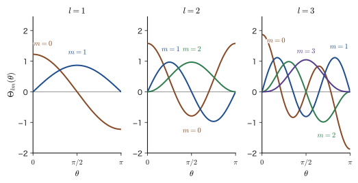
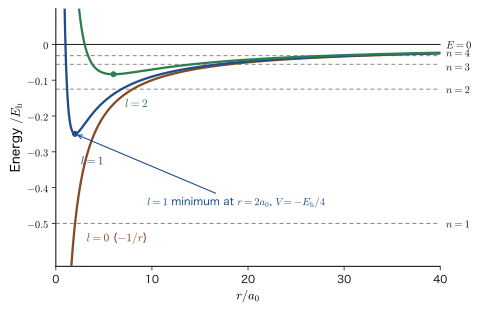
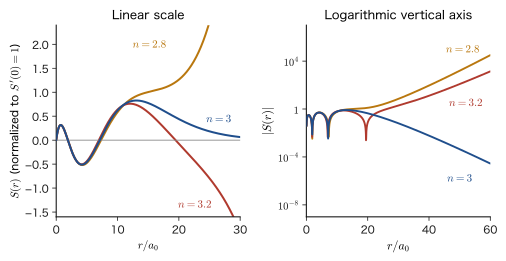
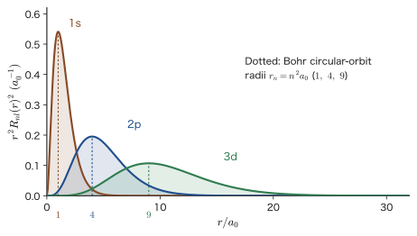

Chapter 15The Hydrogen Atom (1) — Solving the Schrödinger Equation
The hydrogen atom is the simplest of all atoms, made of nothing but a single electron and an atomic nucleus consisting of a single proton. It is also almost the only “real atom” for which the Schrödinger equation can be solved exactly with nothing but paper and pencil. The results obtained in this chapter—the energy levels $E_n=-13.6\ \mathrm{eV}/n^2$, the three quantum numbers $n,l,m$, the s, p, d, and f orbitals, and the names K shell and L shell—are the starting point for all of the topics we treat later: the helium atom (Chapter 29, Chapter 31), many-electron atoms (Chapter 34), molecular orbitals (Chapter 39), and the 3d electrons of transition-metal ions (Chapter 43). In materials science, too, the size and the binding energy of excitons and donor levels in semiconductors can be estimated merely by reading the hydrogen-atom solution a little differently (Section 15.1).
The path to solving the equation is a combination of the tools we saw in the previous two chapters. (1) Since the potential $-e_0^2/(4\pi\varepsilon_0 r)$ is a function of $r$ only (spherically symmetric), as in Chapter 14 we use separation of variables in spherical coordinates to unravel the equation into three ordinary differential equations. (2) The equation in the azimuthal angle $\varphi$ yields the integer quantum number $m$ from the periodicity condition, and the equation in the polar angle $\theta$ yields the integer quantum number $l$ from boundedness at $\theta=0,\pi$. (3) The equation in the radial coordinate $r$ yields the quantum number $n$ and the energy $E_n$ by exactly the same argument as for the harmonic oscillator (Chapter 13)—a power-series solution diverges at infinity unless it is terminated. The three quantum numbers emerge from the three boundary conditions of the three equations.
Let us also check how this differs from classical physics. In the motion of the planets (AD 03, “Introductory University Physics,” Chapter 8, Section 8.4), in a potential of the same $-1/r$ form, the orbit is an ellipse if the total energy is negative, and the energy could take any value continuously. In quantum mechanics the energy takes only the discrete values $-13.6/n^2\ \mathrm{eV}$, and the electron is not a point running along an orbit but spreads out as a probability cloud called an orbital. The energy levels that the Bohr model (Chapter 5, Section 5.3) gave as an “assumption” we “derive” in this chapter from the Schrödinger equation. We also examine the agreements and differences with the Bohr model in Section 15.6.
- Be able to reduce the two-body problem of the hydrogen atom to a one-body problem by using the reduced mass, and to extend the result to hydrogen-like systems such as deuterium, positronium, muonic hydrogen, and the excitons and donors of semiconductors
- Be able to separate variables in spherical coordinates to derive the three ordinary differential equations for $R(r)$, $\Theta(\theta)$, and $\Phi(\varphi)$, and to explain why we write the separation constants as $l(l+1)$ and $m^2$
- Be able to derive $\Phi=e^{im\varphi}/\sqrt{2\pi}$ and $m=0,\pm1,\pm2,\dots$ from the periodicity condition on the azimuthal angle, and the associated Legendre function $P_l^m(\cos\theta)$ together with $l=0,1,2,\dots$ and $\lvert m\rvert\le l$ from boundedness in the polar angle
- Be able to rewrite the radial equation in terms of $R=S/r$, $S=Xe^{-\kappa r}$, and $\rho=2\kappa r$, solve it with a Frobenius series, and derive the principal quantum number $n$ and the energy levels $E_n$ from the termination of the series
- Be able to explain, with numerical values, the $h$ form and the $\hbar$ form of $E_n$, the degeneracy $n^2$, the correspondence with the Bohr model, the spectral series, and Moseley's law
- Be able to understand the normalization constant and the relation between the two conventions for the associated Laguerre polynomials, and to write down the standard form of $R_{nl}(r)$ (positive at the origin)
Source notes: Yasuhide Mochizuki, “Physics Notes: Quantum Mechanics 2,” pp. 41–45 (p. 45 is the upper half only; the lower half onward is in Chapter 16), and a page that sets out the same content in a different order.
15.1 The Hydrogen Atom Problem — From a Two-Body Problem to a One-Body Problem
15.1.1 Setting up the problem
The nucleus of the hydrogen atom is a single proton, whose mass $m_{\mathrm p}$ is about 1836 times the electron mass $m_{\mathrm e}$. So we first regard the proton as a “center of force” at rest at the origin and consider only the electron moving around it (the effect of the proton's motion is taken into account in Section 15.1.2). The charge of the proton is $+e_0$, and the charge of the electron is $-e_0$. By Coulomb's law (Introductory University Physics, Chapter 35, Section 35.1 (in Japanese)), the electrostatic potential energy of the electron at a distance $r$ from the proton is
\begin{equation} V(r)=-\frac{1}{4\pi\varepsilon_0}\frac{e_0^2}{r} \label{eq:15-V} \end{equation}Here $\varepsilon_0$ is the vacuum permittivity, and $e_0=1.602\times10^{-19}\ \mathrm{C}$ is the elementary charge. This potential has the same $-1/r$ form as the potential $-GMm/r$ that gravity produces for a planet, and the attraction grows stronger as the origin is approached. The electron is bound to the proton, and a hydrogen atom is formed.
Definition 15.1: The Schrödinger equation of the hydrogen atom
Determining the wave function $\psi(r,\theta,\varphi)$ that describes a stationary state of an electron (mass $m_{\mathrm e}$) in the potential of Eq. \eqref{eq:15-V}, together with its energy $E$, from the time-independent Schrödinger equation
\begin{equation} -\frac{\hbar^2}{2m_{\mathrm e}}\nabla^2\psi-\frac{1}{4\pi\varepsilon_0}\frac{e_0^2}{r}\,\psi=E\psi \label{eq:15-H} \end{equation}and the following boundary conditions is called the hydrogen atom problem.
- $\psi$ takes a single value at each point of space: $\psi(r,\theta,\varphi+2\pi)=\psi(r,\theta,\varphi)$.
- $\psi$ is finite on the $z$ axis ($\theta=0$ and $\theta=\pi$).
- $\psi$ is finite at the origin $r=0$, and $\psi\to0$ as $r\to\infty$ so that it can be normalized as $\displaystyle\int\abs{\psi}^2\dd V=1$ (a bound state).
The fact that there are three boundary conditions is the reason why three quantum numbers appear (Table 15.4 in Section 15.7). The first is the natural postulate that, since $\varphi$ and $\varphi+2\pi$ represent the same point in space, the values of the wave function there must not disagree. The second, the $z$ axis, consists of special points where $\varphi$ is undetermined (the point is the same however $\varphi$ is changed), and the wave function must not become infinite there. The third follows from the probability interpretation (Chapter 8, Section 8.1): the probability of finding the electron somewhere must be $1$.
Note on notation: $e_0$, $a_0$, $\hbar$ and $h$, and where the quantum numbers start
Elementary charge: As stated in Chapter 1, this book denotes the elementary charge by $e_0$ ($\gt 0$; the electron's charge is $-e_0$) and uses $e$ only for Napier's number. Bohr radius: In this book, $a_0=\dfrac{4\pi\varepsilon_0\hbar^2}{m_{\mathrm e}e_0^2}=5.291\,772\,109\times10^{-11}\ \mathrm{m}$ is written $a_0$. In the related simulators (hydrogen, variational, perturbation) it is written $a_{\mathrm B}$, but it is the same quantity. In AD 02, Chapter 48, $a_0$ was also used for a series coefficient, so the Bohr radius was written separately as $a_0^{(\mathrm{Bohr})}$. In this chapter, series coefficients are written $c_k$; the normalization constant of the radial part is written $c_{nl}$ in the sum form of the old convention and $N_{nl}$ in the standard form; and $a_0$ is used only for the Bohr radius. The indices of the associated Laguerre polynomial (degree $q$, order $p$) are unrelated to the magnetic quantum number $m$. $\hbar$ and $h$: $\hbar=h/2\pi$. Energy levels are given in both the $h$ form (the form used in AD 02, Chapter 48, and in AD 05) and the $\hbar$ form. Where the quantum numbers start: The principal quantum number of the hydrogen atom is counted as $n=1,2,3,\dots$ (there is no $n=0$). This differs from the harmonic oscillator's $n=0,1,2,\dots$, so do not confuse the two.
15.1.2 The proton moves too — reduced mass
The proton's mass is 1836 times the electron's and is “very heavy,” but it is not infinite. Strictly speaking, the hydrogen atom is a two-body problem consisting of two particles, a proton and an electron. Let the position of the proton be $\bm{r}_{\mathrm p}$ and that of the electron be $\bm{r}_{\mathrm e}$; then the total Hamiltonian is
\begin{equation} \hat{H}_{\mathrm{tot}}=-\frac{\hbar^2}{2m_{\mathrm p}}\nabla_{\mathrm p}^2-\frac{\hbar^2}{2m_{\mathrm e}}\nabla_{\mathrm e}^2+V(\abs{\bm{r}_{\mathrm e}-\bm{r}_{\mathrm p}}) \label{eq:15-Htot} \end{equation}Here $\nabla_{\mathrm p}$ and $\nabla_{\mathrm e}$ are the gradients (derivatives) with respect to $\bm{r}_{\mathrm p}$ and $\bm{r}_{\mathrm e}$, respectively. The potential is determined only by the relative position of the two particles. So, just as in the two-body problem of classical mechanics (AD 03, Chapter 2, Section 2.4), we pass to center-of-mass and relative coordinates.
Derivation: Separation of the center-of-mass motion and the relative motion
Let $M=m_{\mathrm e}+m_{\mathrm p}$, and define the position $\bm{R}$ of the center of mass and the relative position $\bm{r}$ by
$$ \bm{R}=\frac{m_{\mathrm e}\bm{r}_{\mathrm e}+m_{\mathrm p}\bm{r}_{\mathrm p}}{M},\qquad \bm{r}=\bm{r}_{\mathrm e}-\bm{r}_{\mathrm p} $$By the chain rule, for each component, $\dfrac{\partial}{\partial r_{\mathrm e}}=\dfrac{\partial R}{\partial r_{\mathrm e}}\dfrac{\partial}{\partial R}+\dfrac{\partial r}{\partial r_{\mathrm e}}\dfrac{\partial}{\partial r}$ and similar relations hold, so
$$ \nabla_{\mathrm e}=\frac{m_{\mathrm e}}{M}\nabla_{R}+\nabla_{r},\qquad \nabla_{\mathrm p}=\frac{m_{\mathrm p}}{M}\nabla_{R}-\nabla_{r} $$(where $\nabla_R$ and $\nabla_r$ are the gradients with respect to $\bm{R}$ and $\bm{r}$). Squaring gives
$$ \nabla_{\mathrm e}^2=\frac{m_{\mathrm e}^2}{M^2}\nabla_R^2+\frac{2m_{\mathrm e}}{M}\nabla_R\!\cdot\!\nabla_r+\nabla_r^2,\qquad \nabla_{\mathrm p}^2=\frac{m_{\mathrm p}^2}{M^2}\nabla_R^2-\frac{2m_{\mathrm p}}{M}\nabla_R\!\cdot\!\nabla_r+\nabla_r^2 $$Substituting these into $\dfrac{1}{m_{\mathrm e}}\nabla_{\mathrm e}^2+\dfrac{1}{m_{\mathrm p}}\nabla_{\mathrm p}^2$, we find that the coefficient of $\nabla_R^2$ is $\dfrac{m_{\mathrm e}}{M^2}+\dfrac{m_{\mathrm p}}{M^2}=\dfrac{1}{M}$, the coefficient of the cross term $\nabla_R\cdot\nabla_r$ is $\dfrac{2}{M}-\dfrac{2}{M}=0$ (the contributions cancel), and the coefficient of $\nabla_r^2$ is $\dfrac{1}{m_{\mathrm e}}+\dfrac{1}{m_{\mathrm p}}$. Therefore,
$$ \hat{H}_{\mathrm{tot}}=-\frac{\hbar^2}{2M}\nabla_R^2-\frac{\hbar^2}{2\mu}\nabla_r^2+V(r),\qquad \frac{1}{\mu}=\frac{1}{m_{\mathrm e}}+\frac{1}{m_{\mathrm p}} $$Now the terms containing $\bm{R}$ and the terms containing $\bm{r}$ are completely separated, so the variables can be separated as $\Psi(\bm{R},\bm{r})=\chi_{\mathrm G}(\bm{R})\,\psi(\bm{r})$. The $\bm{R}$ part is the equation of a free particle of mass $M$, $-\dfrac{\hbar^2}{2M}\nabla_R^2\chi_{\mathrm G}=E_{\mathrm G}\chi_{\mathrm G}$ (the solution is a plane wave $e^{i\bm{K}\cdot\bm{R}}$, with $E_{\mathrm G}=\hbar^2K^2/2M$), and the equation for the $\bm{r}$ part is
$$ -\frac{\hbar^2}{2\mu}\nabla_r^2\psi+V(r)\,\psi=E\psi $$The total energy is $E_{\mathrm{tot}}=E_{\mathrm G}+E$.
∎
Theorem 15.1: Reduction of a two-body problem to a one-body problem (reduced mass)
When two particles (masses $m_1,m_2$) interact through a potential $V(r)$ determined only by the relative position $\bm{r}$, the center of mass moves as a free particle of mass $M=m_1+m_2$, and the relative motion reduces to the problem of a single particle with the reduced mass
\begin{equation} \mu=\frac{m_1m_2}{m_1+m_2}\qquad\left(\frac{1}{\mu}=\frac{1}{m_1}+\frac{1}{m_2}\right) \label{eq:15-mu} \end{equation}moving in $V(r)$.
For the hydrogen atom, $m_1=m_{\mathrm e}$ and $m_2=m_{\mathrm p}$, and $\mu=m_{\mathrm e}/(1+m_{\mathrm e}/m_{\mathrm p})=0.999\,456\,m_{\mathrm e}$. Therefore, the results obtained in this chapter become the exact results that include the effect of the proton's motion if $m_{\mathrm e}$ is replaced everywhere by $\mu$. Since the correction from this replacement is small, about $0.05\%$, we write $m_{\mathrm e}$ in the derivations below for simplicity. However, when the wavelengths of spectral lines are compared precisely, this correction becomes important (Section 15.6.4). Note also that the view of Section 15.1.1, “fixing the proton at the origin,” corresponds to the limit $m_{\mathrm p}\to\infty$ ($\mu\to m_{\mathrm e}$).
Example 15.1: Values of the reduced mass
Find the reduced mass $\mu$ of each of the following two-particle systems in units of the electron mass $m_{\mathrm e}$. (1) An electron and a proton (hydrogen, H), (2) an electron and a deuteron (the nucleus of deuterium, D, an isotope of hydrogen; mass $m_{\mathrm d}=3670.483\,m_{\mathrm e}$), (3) an electron and a positron (positronium), (4) a muon (a particle akin to the electron, with negative charge; mass $m_\mu=206.768\,m_{\mathrm e}$) and a proton (muonic hydrogen). Note that the reduced mass $\mu$, the symbol $\mu^-$ for the muon, and the muon mass $m_\mu$ are different quantities. Take the mass of the proton to be $m_{\mathrm p}=1836.153\,m_{\mathrm e}$.
Solution. Writing Eq. \eqref{eq:15-mu} in units of $m_{\mathrm e}$, we have $\dfrac{\mu}{m_{\mathrm e}}=\dfrac{(m_1/m_{\mathrm e})(m_2/m_{\mathrm e})}{m_1/m_{\mathrm e}+m_2/m_{\mathrm e}}$.
(1) With $m_1/m_{\mathrm e}=1$ and $m_2/m_{\mathrm e}=1836.153$, we get $\dfrac{\mu}{m_{\mathrm e}}=\dfrac{1836.153}{1+1836.153}=\dfrac{1836.153}{1837.153}=0.999\,456$. This is smaller than the electron mass by $0.054\%$.
(2) $\dfrac{\mu}{m_{\mathrm e}}=\dfrac{3670.483}{3671.483}=0.999\,728$. This is closer to the electron mass than in the case of hydrogen, and the difference is about half as large, $0.027\%$.
(3) $\dfrac{\mu}{m_{\mathrm e}}=\dfrac{1\times1}{1+1}=\dfrac12$. When the two particles have equal masses, the reduced mass is halved (if the two particles have the same mass, the center of mass lies midway between them and both move by the same amount; therefore one of them cannot be regarded as being at rest).
(4) $\dfrac{\mu}{m_{\mathrm e}}=\dfrac{206.768\times1836.153}{206.768+1836.153}=\dfrac{379\,657.7}{2042.921}=185.84$. The muon is about 207 times heavier than the electron, so the reduced mass is also about 186 times the electron mass.
To summarize, the reduced mass is always smaller than the lighter of the two masses, and when the two masses differ greatly ((1) and (2) for hydrogen) it is almost equal to the mass of the lighter one. Only when the two masses are of the same order ((3), and partly (4)) does the reduced mass deviate substantially from that of the lighter particle. How the energy levels and sizes of these systems change will be examined in Section 15.6.6.
15.1.3 Strategy for the solution, and hydrogen-like systems
Eq. \eqref{eq:15-H} is a partial differential equation in the three variables $r,\theta,\varphi$, and we cannot attack it as it stands. However, the fact that the potential depends only on $r$ (spherical symmetry) makes possible the separation of variables that we use from the next section on. The strategy is as follows (Figure 15.2 shows the overall flow).
- Look for a solution of the form $\psi=R(r)\,\Theta(\theta)\,\Phi(\varphi)$ in spherical coordinates, and split the equation into three ordinary differential equations (Section 15.2).
- Solve the $\varphi$ equation (Section 15.3), the $\theta$ equation (Section 15.4), and the $r$ equation (Section 15.5), each under its own boundary conditions. Each equation determines one of the quantum numbers $m$, $l$, and $n$, respectively.
- Assemble the solutions to obtain the energy levels (Section 15.6) and the normalized wave functions (Section 15.7).
Application: The hydrogen solution can also be used for “small systems” shaped like hydrogen
The only quantities appearing in Eq. \eqref{eq:15-H} are the electron mass, the elementary charge, and the vacuum permittivity. Therefore, for any system in which “the attraction is of the Coulomb type and one particle moves around another single particle,” the results of this chapter can be used as they are, simply by reading the mass as the reduced mass $\mu$, the charge as $Ze_0$, and $\varepsilon_0$ as $\varepsilon_{\mathrm r}\varepsilon_0$ (the permittivity in a material). Examples are deuterium; hydrogen-like ions such as He+ and Li2+; positronium (an electron and a positron); muonic hydrogen (a muon orbiting a proton); and, furthermore, the exciton in a semiconductor (a pair of an electron and a hole bound by the Coulomb attraction) and shallow donors such as phosphorus in silicon (a state in which an extra electron is loosely bound to an impurity ion). We will obtain some numerical values in Section 15.6.6.
15.2 Separation of Variables — Three Ordinary Differential Equations
15.2.1 Writing the equation in spherical coordinates
Since the potential is a function of $r$ only, it is natural to use spherical coordinates $(r,\theta,\varphi)$ ($\theta$ is the angle from the $z$ axis and $\varphi$ is the azimuthal angle). The Laplace operator (Laplacian) in spherical coordinates is (University Mathematics, Chapter 44, Section 44.4)
\begin{equation} \nabla^2=\frac{1}{r^2}\frac{\partial}{\partial r}\!\left(r^2\frac{\partial}{\partial r}\right)+\frac{1}{r^2\sin\theta}\frac{\partial}{\partial\theta}\!\left(\sin\theta\,\frac{\partial}{\partial\theta}\right)+\frac{1}{r^2\sin^2\theta}\frac{\partial^2}{\partial\varphi^2} \label{eq:15-lap} \end{equation}Here the first term involves differentiation with respect to $r$ only, while the second and third terms involve differentiation with respect to the angles only, and the latter carry $1/r^2$ as an overall coefficient. This structure makes the separation of variables possible. Let us apply the product rule and organize the result by the order of the derivatives.
$$ \frac{1}{r^2}\frac{\partial}{\partial r}\!\left(r^2\frac{\partial\psi}{\partial r}\right)=\frac{\partial^2\psi}{\partial r^2}+\frac{2}{r}\frac{\partial\psi}{\partial r},\qquad \frac{1}{\sin\theta}\frac{\partial}{\partial\theta}\!\left(\sin\theta\,\frac{\partial\psi}{\partial\theta}\right)=\frac{\partial^2\psi}{\partial\theta^2}+\frac{\cos\theta}{\sin\theta}\frac{\partial\psi}{\partial\theta} $$(The latter follows from $\partial_\theta(\sin\theta\,\psi_\theta)=\cos\theta\,\psi_\theta+\sin\theta\,\psi_{\theta\theta}$.) Multiplying Eq. \eqref{eq:15-H} by $-\dfrac{2m_{\mathrm e}}{\hbar^2}r^2$ and transposing terms gives the following form, which is $\nabla^2\psi+\dfrac{2m_{\mathrm e}}{\hbar^2}(E-V)\psi=0$ with both sides multiplied by $r^2$.
\begin{equation} r^2\frac{\partial^2\psi}{\partial r^2}+2r\frac{\partial\psi}{\partial r}+\frac{\partial^2\psi}{\partial\theta^2}+\frac{\cos\theta}{\sin\theta}\frac{\partial\psi}{\partial\theta}+\frac{1}{\sin^2\theta}\frac{\partial^2\psi}{\partial\varphi^2}+\frac{2m_{\mathrm e}}{\hbar^2}\,(E-V)\,r^2\,\psi=0 \label{eq:15-pde} \end{equation}Here $E-V=E+\dfrac{e_0^2}{4\pi\varepsilon_0 r}$ (note the sign of $V=-\dfrac{e_0^2}{4\pi\varepsilon_0 r}$).
15.2.2 Separation of variables — let $\psi=R(r)\,\Theta(\theta)\,\Phi(\varphi)$
We assume that the solution can be written as a product of three functions of one variable each, $\psi(r,\theta,\varphi)=R(r)\,\Theta(\theta)\,\Phi(\varphi)$. Since $R$ is a function of $r$ only, $\Theta$ of $\theta$ only, and $\Phi$ of $\varphi$ only, a partial derivative acts on just one factor of the product, for example $\partial\psi/\partial r=R'\,\Theta\Phi$ and $\partial^2\psi/\partial\theta^2=R\,\Theta''\,\Phi$ (the prime $'$ denotes differentiation with respect to the sole variable of each function). Substituting into Eq. \eqref{eq:15-pde} and dividing by $\psi=R\Theta\Phi$, we get
\begin{equation} r^2\frac{R''}{R}+2r\frac{R'}{R}+\frac{2m_{\mathrm e}}{\hbar^2}\left(E+\frac{e_0^2}{4\pi\varepsilon_0 r}\right)r^2 +\frac{\Theta''}{\Theta}+\frac{\cos\theta}{\sin\theta}\frac{\Theta'}{\Theta}+\frac{1}{\sin^2\theta}\frac{\Phi''}{\Phi}=0 \label{eq:15-sep3} \end{equation}The sign of the $\Phi''/\Phi$ term is $+$ (the sign of $\psi_{\varphi\varphi}/\sin^2\theta$ in Eq. \eqref{eq:15-pde} is carried over unchanged). The first through third terms (up to and including the term containing $E-V$) are functions of $r$ only, and the fourth through sixth terms are functions of $\theta,\varphi$ only, so Eq. \eqref{eq:15-sep3} can be written as
$$ \underbrace{r^2\frac{R''}{R}+2r\frac{R'}{R}+\frac{2m_{\mathrm e}}{\hbar^2}\left(E+\frac{e_0^2}{4\pi\varepsilon_0 r}\right)r^2}_{r\ \text{only}} =-\underbrace{\left[\frac{\Theta''}{\Theta}+\frac{\cos\theta}{\sin\theta}\frac{\Theta'}{\Theta}+\frac{1}{\sin^2\theta}\frac{\Phi''}{\Phi}\right]}_{\theta,\varphi\ \text{only}} $$The left-hand side depends only on $r$ and the right-hand side only on $\theta,\varphi$, and, moreover, the two are “equal for all $(r,\theta,\varphi)$,” so the right-hand side does not change even if we fix $\theta,\varphi$ and vary only $r$. Therefore the left-hand side does not depend on $r$ either, and both sides must be constant. We denote this constant (the separation constant) by $l(l+1)$.
\begin{align} r^2\frac{R''}{R}+2r\frac{R'}{R}+\frac{2m_{\mathrm e}}{\hbar^2}\left(E+\frac{e_0^2}{4\pi\varepsilon_0 r}\right)r^2&=l(l+1) \label{eq:15-rsep}\\ -\frac{\Theta''}{\Theta}-\frac{\cos\theta}{\sin\theta}\frac{\Theta'}{\Theta}-\frac{1}{\sin^2\theta}\frac{\Phi''}{\Phi}&=l(l+1) \label{eq:15-angsep} \end{align}Note that only $R$ remains in Eq. \eqref{eq:15-rsep} and only $\Theta$ and $\Phi$ remain in Eq. \eqref{eq:15-angsep}, so the radial part and the angular part have been completely separated. Multiplying Eq. \eqref{eq:15-rsep} by $R$ and rearranging gives the radial equation (Section 15.2.4).
Why?: Why do we set the separation constants to $l(l+1)$ and $m^2$?
We made the same argument in Chapter 14, Section 14.3.2 (Theorem 14.3). We repeat only the main points. At this stage the separation constant is a constant $\Lambda$ about which nothing is known. Writing it as $l(l+1)$ is merely a labeling device: since $l(l+1)=\bigl(l+\tfrac12\bigr)^2-\tfrac14$, choosing a real number $l\ge0$ lets us write every value $\Lambda\ge0$ in this form. Later (Section 15.4) we will find that the condition for the polar-angle equation to have solutions that are finite at $\theta=0,\pi$ is “$\Lambda=l(l+1)$, where $l$ is an integer greater than or equal to $0$,” so if we write it that way from the start, the later formulas can be written with integers only and the calculation becomes easier. Similarly, we write the other constant as $m^2$ because the solutions of the equation $\Phi''=-m^2\Phi$ are $e^{\pm im\varphi}$, and the periodicity condition shows that $m$ is an integer.
Physically, $l(l+1)\hbar^2$ is an eigenvalue of the operator for the square of the angular momentum, $\hat{\bm{L}}^2=-\hbar^2\!\left[\dfrac{1}{\sin\theta}\dfrac{\partial}{\partial\theta}\!\left(\sin\theta\dfrac{\partial}{\partial\theta}\right)+\dfrac{1}{\sin^2\theta}\dfrac{\partial^2}{\partial\varphi^2}\right]$ (Eq. \eqref{eq:15-angsep} can be read as $\hat{\bm{L}}^2\,\Theta\Phi=l(l+1)\hbar^2\,\Theta\Phi$), and $m\hbar$ is an eigenvalue of the component of the angular momentum about the $z$ axis, $\hat{L}_z=-i\hbar\,\partial/\partial\varphi$ (we derive these algebraically in Part IV).
15.2.3 Separating the angular part further — $\Theta(\theta)$ and $\Phi(\varphi)$
Multiply Eq. \eqref{eq:15-angsep} by $\sin^2\theta$ and move the $\Phi$ term to the right-hand side. Noting that $\sin^2\theta\cdot\dfrac{\cos\theta}{\sin\theta}=\sin\theta\cos\theta$, we obtain
$$ \sin^2\theta\,\frac{\Theta''}{\Theta}+\sin\theta\cos\theta\,\frac{\Theta'}{\Theta}+l(l+1)\sin^2\theta+\frac{\Phi''}{\Phi}=0 \quad\text{that is,}\quad \sin^2\theta\,\frac{\Theta''}{\Theta}+\sin\theta\cos\theta\,\frac{\Theta'}{\Theta}+l(l+1)\sin^2\theta=-\frac{\Phi''}{\Phi} $$The left-hand side is a function of $\theta$ only and the right-hand side is a function of $\varphi$ only, and they are equal for all $\theta,\varphi$, so for the same reason as before both sides are constant. Let us call this constant $m^2$.
\begin{equation} \sin^2\theta\,\frac{\Theta''}{\Theta}+\sin\theta\cos\theta\,\frac{\Theta'}{\Theta}+l(l+1)\sin^2\theta=-\frac{\Phi''}{\Phi}=m^2 \label{eq:15-thphi} \end{equation}Here we set the constant to $+m^2$ rather than $-m^2$ because $\Phi''=-m^2\Phi$ has the form that admits the periodic solutions $e^{\pm im\varphi}$. If the constant were negative, we would have $\Phi''=+k^2\Phi$, whose solutions $e^{\pm k\varphi}$ grow or decay exponentially and so cannot be periodic functions that return to their original values after one full turn ($\varphi\to\varphi+2\pi$) (Section 15.3).
Note also that we can write the angular part collectively as $Y(\theta,\varphi)=\Theta(\theta)\,\Phi(\varphi)$ and first carry out only the separation of the form $\psi=R(r)\,Y(\theta,\varphi)$. In this case, substituting $\psi=RY$ into Eq. \eqref{eq:15-pde} and dividing by $RY$ gives $\dfrac1R\bigl(r^2R''+2rR'\bigr)+\dfrac{2m_{\mathrm e}}{\hbar^2}\Bigl(E+\dfrac{e_0^2}{4\pi\varepsilon_0r}\Bigr)r^2+\dfrac1Y\Bigl(\dfrac{\partial^2Y}{\partial\theta^2}+\dfrac{\cos\theta}{\sin\theta}\dfrac{\partial Y}{\partial\theta}+\dfrac{1}{\sin^2\theta}\dfrac{\partial^2Y}{\partial\varphi^2}\Bigr)=0$. Since the first and second terms are functions of $r$ only and the third term is a function of $\theta,\varphi$ only, the $r$ part equals the constant $l(l+1)$ for the same reason as before, and we obtain the following equation, which contains only the angular part of the Laplace operator.
\begin{equation} \frac{\partial^2Y}{\partial\theta^2}+\frac{\cos\theta}{\sin\theta}\frac{\partial Y}{\partial\theta}+\frac{1}{\sin^2\theta}\frac{\partial^2Y}{\partial\varphi^2}=-l(l+1)\,Y \label{eq:15-Yeq} \end{equation}Substituting $Y=\Theta\Phi$ into this and dividing by $\Theta\Phi$ gives Eq. \eqref{eq:15-angsep}. Eq. \eqref{eq:15-Yeq} is an equation common to every central-force potential (Example 15.2).
15.2.4 The three ordinary differential equations
Clearing the denominators in Eq. \eqref{eq:15-rsep} and Eq. \eqref{eq:15-thphi} and rearranging, we obtain the following three equations.
Formula 15.1: The three ordinary differential equations of the hydrogen atom
A solution $\psi=R(r)\,\Theta(\theta)\,\Phi(\varphi)$ of the Schrödinger equation of the hydrogen atom, Eq. \eqref{eq:15-H}, satisfies the following three ordinary differential equations, which contain the separation constants $l(l+1)$ and $m^2$.
\begin{align} &r^2\frac{\dd^2R}{\dd r^2}+2r\frac{\dd R}{\dd r}+\left\{\frac{2m_{\mathrm e}}{\hbar^2}\left(Er^2+\frac{e_0^2}{4\pi\varepsilon_0}\,r\right)-l(l+1)\right\}R=0 \tag{①}\label{eq:15-R}\\[1mm] &\sin^2\theta\,\frac{\dd^2\Theta}{\dd\theta^2}+\sin\theta\cos\theta\,\frac{\dd\Theta}{\dd\theta}+\bigl\{l(l+1)\sin^2\theta-m^2\bigr\}\Theta=0 \tag{②}\label{eq:15-Th}\\[1mm] &\frac{\dd^2\Phi}{\dd\varphi^2}+m^2\,\Phi=0 \tag{③}\label{eq:15-Ph} \end{align}The sign of the Coulomb term $+\dfrac{e_0^2}{4\pi\varepsilon_0}r$ in the third term of Eq. \eqref{eq:15-R} comes from $E-V=E+\dfrac{e_0^2}{4\pi\varepsilon_0 r}$. Eqs. \eqref{eq:15-R}–\eqref{eq:15-Ph} are ordinary differential equations containing only $r$, only $\theta$, and only $\varphi$, respectively, and they can be solved independently of one another. However, the fact that $l$ appears in both Eq. \eqref{eq:15-R} and Eq. \eqref{eq:15-Th}, and that $m$ appears in both Eq. \eqref{eq:15-Th} and Eq. \eqref{eq:15-Ph}, is the origin of the restrictions among the quantum numbers ($l\le n-1$, $\lvert m\rvert\le l$).
Example 15.2: The angular part is the same for any central force—the radial equations of hydrogen and the three-dimensional harmonic oscillator
For an arbitrary potential $V(r)$, write down the radial equation (Chapter 14, Theorem 14.3). Describe the difference between the radial equation of the three-dimensional harmonic oscillator $V=\tfrac12m_{\mathrm e}\omega^2r^2$ and Eq. \eqref{eq:15-R} for the hydrogen atom.
Solution. In Section 15.2.1, the only place where we used the explicit form of $V$ was the last term, $\dfrac{2m_{\mathrm e}}{\hbar^2}(E-V)r^2\psi$. Therefore, even for a general $V(r)$, substituting $\psi=RY$ and dividing by $RY$ gives an equation of the form “an $r$-only expression $+\ \theta,\varphi$-only expression $=0$”; the angular part is given by Eq. \eqref{eq:15-Yeq} regardless of $V$, and the radial part is as follows:
$$ r^2R''+2rR'+\left\{\frac{2m_{\mathrm e}}{\hbar^2}\bigl(E-V(r)\bigr)r^2-l(l+1)\right\}R=0 $$For the three-dimensional harmonic oscillator, $\dfrac{2m_{\mathrm e}}{\hbar^2}\cdot\dfrac12m_{\mathrm e}\omega^2r^2\cdot r^2=\left(\dfrac{m_{\mathrm e}\omega}{\hbar}\right)^2r^4$, so the third term of the radial equation takes the form $\left\{\dfrac{2m_{\mathrm e}E}{\hbar^2}r^2-\left(\dfrac{m_{\mathrm e}\omega}{\hbar}\right)^2r^4-l(l+1)\right\}R$. The only difference from Eq. \eqref{eq:15-R} for the hydrogen atom is whether the term coming from $V$ varies as $r^4$ (harmonic oscillator) or as $r^1$ (hydrogen). Therefore, the solution $\Theta(\theta)\Phi(\varphi)$ of the angular part—that is, the set of values of $l$ and $m$ and the $2l+1$-fold degeneracy—is common to all central forces, and the difference between potentials appears only in the energy and the radial function (for the spherical well, see Chapter 14).
15.3 The Azimuthal-Angle Equation — The Periodicity Condition and the Magnetic Quantum Number
Of the three equations, we begin with the simplest one, Eq. \eqref{eq:15-Ph}. In Chapter 14, Section 14.5 we used the result that the periodicity condition makes $m$ an integer. Here we derive it, checking the assumptions one at a time. The azimuthal angle $\varphi$ is the angle of rotation about the $z$ axis, and $\varphi$ and $\varphi+2\pi$ represent the same point in space.
15.3.1 The general solution and the periodicity condition
Eq. \eqref{eq:15-Ph}, $\Phi''+m^2\Phi=0$, is a second-order linear homogeneous equation with constant coefficients, and the solutions of its characteristic equation $s^2+m^2=0$ are $s=\pm im$ (University Mathematics, Chapter 35, Section 35.4). For $m\ne0$, the general solution is
\begin{equation} \Phi(\varphi)=C_+\,e^{im\varphi}+C_-\,e^{-im\varphi} \label{eq:15-Phgen} \end{equation}($C_\pm$ are constants). The boundary condition (item 1 of Definition 15.1) states that $\Phi$ returns to its original value when $\varphi$ is increased by $2\pi$; that is, $\Phi(\varphi+2\pi)=\Phi(\varphi)$ for all $\varphi$. Substituting Eq. \eqref{eq:15-Phgen} gives
$$ C_+e^{im\varphi}\bigl(e^{2\pi im}-1\bigr)+C_-e^{-im\varphi}\bigl(e^{-2\pi im}-1\bigr)=0\qquad(\text{for all }\varphi) $$Since $e^{im\varphi}$ and $e^{-im\varphi}$ are linearly independent as functions of $\varphi$, each coefficient must be $0$: $C_+(e^{2\pi im}-1)=0$ and $C_-(e^{-2\pi im}-1)=0$. At least one of $C_+,C_-$ is not $0$, so $e^{2\pi im}=1$; that is,
\begin{equation} m=0,\ \pm1,\ \pm2,\ \dots\qquad(m\ \text{is an integer}) \label{eq:15-mint} \end{equation}This follows because $e^{2\pi im}=\cos2\pi m+i\sin2\pi m=1$ holds only when $m$ is an integer. Note, however, that if we do not require the condition to hold for all $\varphi$ and impose only the matching of the values at the single point $\varphi=0$, $\Phi(0)=\Phi(2\pi)$, that is, $C_++C_-=C_+e^{2\pi im}+C_-e^{-2\pi im}$, then this one equation does not yield the integer condition. We must also impose the matching of the slopes at the same point, $\Phi'(0)=\Phi'(2\pi)$, that is, $C_+-C_-=C_+e^{2\pi im}-C_-e^{-2\pi im}$. Adding and subtracting the two equations gives $C_+=C_+e^{2\pi im}$ and $C_-=C_-e^{-2\pi im}$, which leads to the same conclusion as above.
For $m=0$, we have $\Phi''=0$, and the general solution is $\Phi=C_0+C_1\varphi$. If $C_1\ne0$, the value changes under $\varphi\to\varphi+2\pi$, so the periodicity condition gives $C_1=0$, and the only solution is the constant $\Phi=C_0$. Also, if the constant $m^2$ were negative ($-k^2$), the solutions $e^{\pm k\varphi}$ of $\Phi''=k^2\Phi$ would increase or decrease monotonically in $\varphi$ and could not be periodic. Therefore $m^2\ge0$ was required (the reasoning of Section 15.2.3).
15.3.2 The sign of $m$ and the solution combined into one
Eq. \eqref{eq:15-Ph} contains only $m^2$, so $m$ and $-m$ give the same equation. When we write $m\gt 0$, the general solution is Eq. \eqref{eq:15-Phgen}, which contains the two solutions $e^{im\varphi}$ (coefficient $C_+$) and $e^{-im\varphi}$ (coefficient $C_-$). If we write the same equation with the symbol $m\lt 0$, the signs of the exponents are merely interchanged, giving $\Phi=C_-e^{im\varphi}+C_+e^{-im\varphi}$, and the set of solutions is the same. That is, either sign of $m$ is fine, and $e^{im\varphi}$ and $e^{-im\varphi}$ give two independent solutions. It is therefore convenient to let the integer $m$ run over all positive and negative values, to count $m$ and $-m$ as separate states, and to assign only the single term $e^{im\varphi}$ to each $m$. In this way, all of $m=0,\pm1,\pm2,\dots$ can be written together in one formula. Fixing the constant $C=1/\sqrt{2\pi}$ (apart from a phase factor) by the normalization condition $\displaystyle\int_0^{2\pi}\abs{\Phi}^2\dd\varphi=2\pi\abs{C}^2=1$, we obtain the following.
Theorem 15.2: The azimuthal-angle solution and the magnetic quantum number $m$
Eq. \eqref{eq:15-Ph} has a solution satisfying the periodicity condition $\Phi(\varphi+2\pi)=\Phi(\varphi)$ only when $m$ is an integer. The normalized solutions are
\begin{equation} \Phi_m(\varphi)=\frac{1}{\sqrt{2\pi}}\,e^{im\varphi}\qquad(m=0,\pm1,\pm2,\dots) \label{eq:15-Phi} \end{equation}These satisfy the orthonormality relation $\displaystyle\int_0^{2\pi}\Phi_m^*\,\Phi_{m'}\dd\varphi=\delta_{mm'}$. We call $m$ the magnetic quantum number.
Orthonormality follows from the following two calculations. For $m\ne m'$, $\displaystyle\int_0^{2\pi}e^{i(m'-m)\varphi}\dd\varphi=\left[\dfrac{e^{i(m'-m)\varphi}}{i(m'-m)}\right]_0^{2\pi}=0$ (since $m'-m$ is an integer other than $0$, $e^{2\pi i(m'-m)}=1$). For $m=m'$, $\dfrac{1}{2\pi}\displaystyle\int_0^{2\pi}\dd\varphi=1$.
Intuition: A whole number of waves fits around the circle
The function $e^{im\varphi}=\cos m\varphi+i\sin m\varphi$ is a wave whose phase makes $m$ turns ($m\times2\pi$) during one trip around the $z$ axis. To return to its original value after one trip, exactly a whole number of wavelengths must fit around the circumference. This is the same reasoning as in the Bohr–de Broglie quantum condition ($2\pi r=n\lambda$, Chapter 6) and in the standing waves on a string (Chapter 10). The probability density $\abs{\Phi_m}^2=1/2\pi$ is uniform, independent of $\varphi$ (rotational symmetry about the $z$ axis), but the phase of a wave with $m\gt 0$ advances in the direction in which $\varphi$ increases, and that of a wave with $m\lt 0$ in the direction in which it decreases, and they carry angular momentum $+m\hbar$ and $-m\hbar$ about the $z$ axis, respectively. Indeed, applying $\hat{L}_z=-i\hbar\,\partial/\partial\varphi$ gives $\hat{L}_z\Phi_m=-i\hbar\,(im)\Phi_m=m\hbar\,\Phi_m$, so $\Phi_m$ is an eigenfunction of $\hat{L}_z$ with eigenvalue $m\hbar$. The reason $m$ is called the “magnetic” quantum number is that in a magnetic field (taking the field along the $z$ direction) the levels split according to $m$ (the Zeeman effect, Chapter 26).
Caution: The real functions $\cos m\varphi$ and $\sin m\varphi$ are also solutions
Eq. \eqref{eq:15-Ph} has real coefficients, so the linear combinations of $e^{\pm im\varphi}$, $\cos m\varphi=(e^{im\varphi}+e^{-im\varphi})/2$ and $\sin m\varphi=(e^{im\varphi}-e^{-im\varphi})/2i$, also give two independent solutions (for $m\ne0$). These are real functions, and their normalization constant is $1/\sqrt{\pi}$. However, they are not eigenfunctions of $\hat{L}_z$, as in $\hat{L}_z\cos m\varphi=i\hbar m\sin m\varphi$ (they are superpositions of $+m\hbar$ and $-m\hbar$). Real orbitals ($p_x,p_y,d_{xy}$, etc.) are constructed from these real forms (Chapter 16).
Example 15.3: The periodicity condition and normalization
(1) Show that $\Phi=e^{im\varphi}$ with $m=\tfrac12$ does not satisfy the periodicity condition. (2) Find the normalized function for $m=3$, and verify that the functions for $m=3$ and $m=-2$ are orthogonal. (3) Normalize $\cos2\varphi$ and find the expectation value of $\hat{L}_z$.
Solution. (1) $\Phi(\varphi+2\pi)=e^{i\cdot\frac12(\varphi+2\pi)}=e^{i\varphi/2}e^{i\pi}=-e^{i\varphi/2}=-\Phi(\varphi)$. Since $\Phi\ne0$, $\Phi(\varphi+2\pi)\ne\Phi(\varphi)$, so the periodicity condition is not satisfied (the sign changes after $1$ full turn). A half-integer $m$ is not allowed for a function of space (the electron's spin angular momentum is not a function of space, so it can take half-integer values; see Part IV).
(2) From $\displaystyle\int_0^{2\pi}\abs{Ce^{3i\varphi}}^2\dd\varphi=2\pi\abs{C}^2=1$ we get $C=1/\sqrt{2\pi}$, so $\Phi_3=e^{3i\varphi}/\sqrt{2\pi}$. For orthogonality, $\displaystyle\int_0^{2\pi}\Phi_3^*\Phi_{-2}\dd\varphi=\frac{1}{2\pi}\int_0^{2\pi}e^{-3i\varphi}e^{-2i\varphi}\dd\varphi=\frac{1}{2\pi}\left[\frac{e^{-5i\varphi}}{-5i}\right]_0^{2\pi}=\frac{1}{2\pi}\cdot\frac{e^{-10\pi i}-1}{-5i}=0$.
(3) From $\displaystyle\int_0^{2\pi}\cos^22\varphi\dd\varphi=\int_0^{2\pi}\frac{1+\cos4\varphi}{2}\dd\varphi=\pi$, the normalized function is $\cos2\varphi/\sqrt{\pi}$. The expectation value of $\hat{L}_z=-i\hbar\,\partial/\partial\varphi$ is $\displaystyle\frac{1}{\pi}\int_0^{2\pi}\cos2\varphi\,(-i\hbar)(-2\sin2\varphi)\dd\varphi=\frac{2i\hbar}{\pi}\int_0^{2\pi}\cos2\varphi\sin2\varphi\dd\varphi=\frac{i\hbar}{\pi}\int_0^{2\pi}\sin4\varphi\dd\varphi=0$. The function $\cos2\varphi$ is a state in which $m=+2$ and $m=-2$ are superposed with equal weights, and $L_z=+2\hbar$ and $-2\hbar$ are each observed with probability $1/2$, so the average is $0$.
15.4 The Polar-Angle Equation — The Associated Legendre Differential Equation
Next we solve Eq. \eqref{eq:15-Th} (which contains the separation constants $l(l+1)$ and $m^2$). In Chapter 14, Section 14.5, we used only the results: the change of variable to $x=\cos\theta$, and the fact that the solutions finite at both poles are the associated Legendre functions. Here we derive the change of variables, the behavior at the two poles, and the termination of the series one line at a time, skipping no lines, and thereby make clear the reason for the quantization (the derivation of the result of Section 14.5.2 of Chapter 14 is written here). This equation appears for any central-force potential (Example 15.2). Hence the solutions obtained here are used not only for the hydrogen atom but for every spherically symmetric system (the angular dependence of a single electron in an atom or molecule, the spherical well).
15.4.1 Changing the variable to $x=\cos\theta$
The angle $\theta$ ranges over $0\le\theta\le\pi$. So we let $x=\cos\theta$; then $x$ equals $1$ at $\theta=0$ and $-1$ at $\theta=\pi$, and in this range $\theta$ and $x$ are in one-to-one correspondence. Since $\sin\theta\ge0$, we have
$$ \sin^2\theta=1-\cos^2\theta=1-x^2,\qquad \sin\theta=\sqrt{1-x^2},\qquad \frac{\dd x}{\dd\theta}=-\sin\theta $$We regard $\Theta$ as a function of $x$ and use the chain rule.
Derivation: Converting derivatives with respect to $\theta$ into derivatives with respect to $x$
First derivative: the chain rule $\dfrac{\dd}{\dd\theta}=\dfrac{\dd x}{\dd\theta}\dfrac{\dd}{\dd x}$ gives
\begin{equation} \frac{\dd\Theta}{\dd\theta}=\frac{\dd\Theta}{\dd x}\cdot\frac{\dd x}{\dd\theta}=-\sin\theta\,\frac{\dd\Theta}{\dd x} \label{eq:15-dth1} \end{equation}Second derivative: we differentiate Eq. \eqref{eq:15-dth1} with respect to $\theta$ once more. Since $-\sin\theta\,\dfrac{\dd\Theta}{\dd x}$ is a function of $x$ ($\sin\theta=\sqrt{1-x^2}$ can also be written in terms of $x$), we use the chain rule $\dfrac{\dd}{\dd\theta}=\dfrac{\dd x}{\dd\theta}\dfrac{\dd}{\dd x}$ once more, multiplying from the right by $\dfrac{\dd x}{\dd\theta}=-\sin\theta$, to get
$$ \frac{\dd^2\Theta}{\dd\theta^2}=\frac{\dd}{\dd x}\!\left(-\sin\theta\,\frac{\dd\Theta}{\dd x}\right)\cdot\underbrace{\frac{\dd x}{\dd\theta}}_{-\sin\theta} =\left\{\frac{\dd(-\sin\theta)}{\dd x}\frac{\dd\Theta}{\dd x}-\sin\theta\,\frac{\dd^2\Theta}{\dd x^2}\right\}(-\sin\theta) $$Here $\dfrac{\dd(-\sin\theta)}{\dd x}=\dfrac{\dd}{\dd x}\bigl(-\sqrt{1-x^2}\bigr)=\dfrac{x}{\sqrt{1-x^2}}=\dfrac{x}{\sin\theta}$. Therefore we obtain
\begin{equation} \frac{\dd^2\Theta}{\dd\theta^2}=\left\{\frac{x}{\sin\theta}\frac{\dd\Theta}{\dd x}-\sin\theta\,\frac{\dd^2\Theta}{\dd x^2}\right\}(-\sin\theta) =(1-x^2)\frac{\dd^2\Theta}{\dd x^2}-x\,\frac{\dd\Theta}{\dd x} \label{eq:15-dth2} \end{equation}Here we used $\sin^2\theta=1-x^2$.
Substitution into Eq. \eqref{eq:15-Th}: we rewrite the three terms of Eq. \eqref{eq:15-Th} using Eqs. \eqref{eq:15-dth1} and \eqref{eq:15-dth2}.
$$ \begin{aligned} \sin^2\theta\,\frac{\dd^2\Theta}{\dd\theta^2}&=(1-x^2)\left\{(1-x^2)\frac{\dd^2\Theta}{\dd x^2}-x\frac{\dd\Theta}{\dd x}\right\},\\ \sin\theta\cos\theta\,\frac{\dd\Theta}{\dd\theta}&=\sin\theta\cdot x\cdot\Bigl(-\sin\theta\,\frac{\dd\Theta}{\dd x}\Bigr)=-x(1-x^2)\frac{\dd\Theta}{\dd x},\\ \bigl\{l(l+1)\sin^2\theta-m^2\bigr\}\Theta&=\bigl\{l(l+1)(1-x^2)-m^2\bigr\}\Theta \end{aligned} $$so the sum is
$$ (1-x^2)^2\frac{\dd^2\Theta}{\dd x^2}-x(1-x^2)\frac{\dd\Theta}{\dd x}-x(1-x^2)\frac{\dd\Theta}{\dd x}+\bigl\{l(l+1)(1-x^2)-m^2\bigr\}\Theta=0 $$that is, $(1-x^2)^2\Theta''-2x(1-x^2)\Theta'+\bigl\{l(l+1)(1-x^2)-m^2\bigr\}\Theta=0$ (with $\Theta'=\dd\Theta/\dd x$). For $\lvert x\rvert\lt1$ we have $1-x^2\ne0$, so we can divide both sides by $1-x^2$.
∎
Formula 15.2: The associated Legendre differential equation
With $x=\cos\theta$ as the variable, Eq. \eqref{eq:15-Th} becomes
\begin{equation} (1-x^2)\frac{\dd^2\Theta}{\dd x^2}-2x\frac{\dd\Theta}{\dd x}+\left\{l(l+1)-\frac{m^2}{1-x^2}\right\}\Theta=0 \label{eq:15-legendre} \end{equation}This is called the associated Legendre differential equation. For $m=0$ it is the Legendre differential equation $(1-x^2)\Theta''-2x\Theta'+l(l+1)\Theta=0$ (University Mathematics, Chapter 40, Section 40.1).
15.4.2 Behavior at $x=\pm1$ (on the $z$ axis)
The coefficient $1-x^2$ of $\Theta''$ in Eq. \eqref{eq:15-legendre} becomes $0$ at $x=\pm1$ (that is, at $\theta=0,\pi$, on the $z$ axis). This is a singular point of the equation, and it is the place where the boundary condition (item 2 of Definition 15.1) applies. Near $x=1$, let $t=1-x$ (a small positive number); then $1-x^2=(1-x)(1+x)\approx2t$ and $x\approx1$. Assuming $\Theta\sim t^s$, we have $\dfrac{\dd\Theta}{\dd x}=-\dfrac{\dd\Theta}{\dd t}=-s\,t^{s-1}$ and $\dfrac{\dd^2\Theta}{\dd x^2}=s(s-1)t^{s-2}$, so among the terms of Eq. \eqref{eq:15-legendre}, the $t^{s-1}$ terms (the most strongly divergent ones) are
$$ 2t\cdot s(s-1)t^{s-2}-2\cdot(-s\,t^{s-1})-\frac{m^2}{2t}\,t^s=\Bigl(2s^2-\frac{m^2}{2}\Bigr)t^{s-1} $$The condition that this be $0$, $2s^2=m^2/2$, gives $s=\pm\lvert m\rvert/2$. That is, near $x=1$ there are two kinds of solutions: $(1-x)^{+\lvert m\rvert/2}$ (which goes to $0$ as $x\to1$) and $(1-x)^{-\lvert m\rvert/2}$ (which diverges when $m\ne0$) (when $m=0$, $s=0$ is a double root, and the second solution diverges like $\ln(1-x)$). The same holds at $x=-1$. What the boundary condition (finite on the $z$ axis) requires is that we discard the divergent solution and choose a solution that is finite at both $x=1$ and $x=-1$. In general, a solution that is finite at $x=1$ diverges at $x=-1$, so finiteness at both ends simultaneously is possible only when the constant $l(l+1)$ of the equation takes a special value. This is the quantization of $l$.
To solve this second-order differential equation, we first factor out the non-divergent factor $(1-x^2)^{\lvert m\rvert/2}$ and, with $M=\lvert m\rvert$ (since the equation contains only $m^2$, it can be written in terms of $M$), let
\begin{equation} \Theta(x)=(1-x^2)^{M/2}\,v(x) \label{eq:15-Thv} \end{equation}Let us find the equation that $v(x)$ satisfies.
Derivation: The equation for $v(x)$
Let $w=(1-x^2)^{M/2}$; then $\Theta=wv$, and
$$ w'=-Mx(1-x^2)^{\frac M2-1},\qquad w''=-M(1-x^2)^{\frac M2-1}+M(M-2)x^2(1-x^2)^{\frac M2-2} $$These hold (in differentiating $w'$, the derivative of $(1-x^2)^{M/2-1}$ gives $(M/2-1)(1-x^2)^{M/2-2}(-2x)$). We substitute $\Theta'=w'v+wv'$ and $\Theta''=w''v+2w'v'+wv''$ into the left-hand side of Eq. \eqref{eq:15-legendre} (abbreviating $L=l(l+1)$) and collect terms according to $v'',v',v$.
$$ (1-x^2)\Theta''-2x\Theta'+\Bigl\{L-\frac{M^2}{1-x^2}\Bigr\}\Theta =(1-x^2)w\,v''+\bigl[2(1-x^2)w'-2xw\bigr]v'+\Bigl[(1-x^2)w''-2xw'+\Bigl(L-\frac{M^2}{1-x^2}\Bigr)w\Bigr]v $$Using $w'/w=-Mx/(1-x^2)$, the coefficient of $v'$ is $w\bigl[-2Mx-2x\bigr]=-2(M+1)x\,w$. The coefficient of $v$, using $w''/w=-\dfrac{M}{1-x^2}+\dfrac{M(M-2)x^2}{(1-x^2)^2}$, is
$$ w\left[-M+\frac{M(M-2)x^2}{1-x^2}+\frac{2Mx^2}{1-x^2}+L-\frac{M^2}{1-x^2}\right] =w\left[L-M+\frac{M^2x^2-M^2}{1-x^2}\right]=w\bigl[L-M-M^2\bigr] $$Here we used $M(M-2)x^2+2Mx^2=M^2x^2$ and $M^2x^2-M^2=-M^2(1-x^2)$. Dividing the whole by $w$, we obtain the following.
\begin{equation} (1-x^2)\frac{\dd^2v}{\dd x^2}-2(M+1)x\frac{\dd v}{\dd x}+\bigl[l(l+1)-M(M+1)\bigr]v=0 \label{eq:15-veq} \end{equation}∎
Eq. \eqref{eq:15-veq} guarantees that $\Theta$ is finite if we require that “the remainder $v$ after removing the factor $(1-x^2)^{M/2}$” be finite at $x=\pm1$ (since $M\ge0$, the factor $(1-x^2)^{M/2}$ is finite). So in the next subsection we investigate the condition under which a solution of Eq. \eqref{eq:15-veq} is finite at $x=\pm1$.
15.4.3 Power series and the quantization of $l$
The coefficients of Eq. \eqref{eq:15-veq} are polynomials, so it can be solved by a power series $v=\sum_{j=0}^{\infty}b_jx^j$ centered at $x=0$ ($\theta=\pi/2$, the equatorial plane) (the same method as for the case $M=0$ in University Mathematics, Chapter 40, Section 40.1). We differentiate term by term and substitute.
$$ (1-x^2)v''=\sum_{j}j(j-1)b_jx^{j-2}-\sum_{j}j(j-1)b_jx^j=\sum_{j=0}^{\infty}(j+2)(j+1)b_{j+2}x^j-\sum_{j}j(j-1)b_jx^j,\qquad -2(M+1)xv'=-2(M+1)\sum_{j}j\,b_jx^j $$(In the first sum, we shifted the index by $j\to j+2$ in order to align the powers of $x$.) Collecting the coefficients of $x^j$, we get $(j+2)(j+1)b_{j+2}-\bigl[j(j-1)+2(M+1)j-l(l+1)+M(M+1)\bigr]b_j=0$. The expression in the brackets simplifies: since $j(j-1)+2(M+1)j=j^2+(2M+1)j$, it becomes $j^2+(2M+1)j+M(M+1)-l(l+1)=(j+M)(j+M+1)-l(l+1)$, and therefore we obtain
\begin{equation} b_{j+2}=\frac{(j+M)(j+M+1)-l(l+1)}{(j+1)(j+2)}\,b_j\qquad(j=0,1,2,\dots) \label{eq:15-brecur} \end{equation}The even-indexed coefficients (starting from $b_0$) and the odd-indexed coefficients (starting from $b_1$) form two independent series. When the series continues indefinitely, $b_{j+2}/b_j\to1$ as $j\to\infty$ (the numerator and denominator are both quadratic, with highest-degree term $j^2$, and the coefficient of that term is $1$). A series whose ratio approaches $1$ behaves like a geometric series such as $\sum x^j$, and diverges as $\lvert x\rvert\to1$ (for $M=0$, $\sum x^j/j\sim-\ln(1-x)$, and for $M\ge1$ it diverges even more strongly, like $(1-x)^{-M}$). That is, if the series continues indefinitely, $v$ diverges at $x=\pm1$ and the boundary condition is not satisfied.
The general solution is the linear combination $v=E+O$ of the even-indexed series $E(x)=b_0+b_2x^2+\cdots$ and the odd-indexed series $O(x)=b_1x+b_3x^3+\cdots$. Since $E$ is an even function and $O$ is an odd function, $v(\pm1)=E(1)\pm O(1)$. If $v$ is finite at both $x=1$ and $x=-1$, then both $E(1)=\tfrac12\bigl[v(1)+v(-1)\bigr]$ and $O(1)=\tfrac12\bigl[v(1)-v(-1)\bigr]$ are finite. Therefore neither $E$ nor $O$ may continue indefinitely: each must terminate or be identically $0$ (this is a confirmation, by means of the series, of the statement made in Section 15.4.2 that “a solution that is finite at $x=1$ generally diverges at $x=-1$”).
Therefore the series must terminate after a finite number of terms and become a polynomial. For $b_{j_{\max}+2}=0$ (and $b_{j_{\max}}\ne0$) to hold at some $j=j_{\max}\ge0$, it suffices that the numerator of Eq. \eqref{eq:15-brecur} become $0$:
$$ (j_{\max}+M)(j_{\max}+M+1)=l(l+1)\qquad\Longrightarrow\qquad j_{\max}+M=l\ \ (\ge0) $$(The equation $(j+M)(j+M+1)=l(l+1)$ has two solutions, $j+M=l$ and $j+M=-l-1$, but since $j+M\ge0$ we take the former.) Since $j_{\max}$ and $M$ are both integers greater than or equal to $0$, $l=j_{\max}+M$ is an integer greater than or equal to $M$. Of the even-indexed and odd-indexed series, the one that terminates is determined (it is the one whose parity matches that of $j_{\max}$), and the other is removed by setting its coefficients to $0$. In the end, we obtain the following conditions:
- $l=0,1,2,\dots$ (integers greater than or equal to $0$).
- $M=\lvert m\rvert\le l$, that is, $m=-l,-l+1,\dots,l-1,l$ ($2l+1$ values).
- $v$ is a polynomial in $x$ of degree $l-\lvert m\rvert$.
These are the conditions we obtain. As in the infinite well (Chapter 10) and the harmonic oscillator (Chapter 13), the quantization comes out of “the condition for a solution that satisfies the boundary condition (here, finiteness on the $z$ axis) to exist”.
15.4.4 The associated Legendre function $P_l^m$
Let us write the polynomial solution explicitly. For $M=0$, Eq. \eqref{eq:15-veq} is the Legendre differential equation, and its polynomial solution is the Legendre polynomial $P_l(x)$. Rodrigues' formula (University Mathematics, Chapter 40, Section 40.5) is
\begin{equation} P_l(x)=\frac{1}{2^l\,l!}\frac{\dd^l}{\dd x^l}\bigl(x^2-1\bigr)^l \label{eq:15-rodrigues} \end{equation}(with $P_0=1$, $P_1=x$, $P_2=\tfrac12(3x^2-1)$, $P_3=\tfrac12(5x^3-3x)$). The polynomial solution for general $M$ is the $M$th derivative of $P_l$. To confirm this, we differentiate both sides of the Legendre differential equation $(1-x^2)P_l''-2xP_l'+l(l+1)P_l=0$ $M$ times with respect to $x$. Using Leibniz's formula $\dfrac{\dd^M}{\dd x^M}(fg)=\sum_{k}\binom{M}{k}f^{(k)}g^{(M-k)}$, and noting that $1-x^2$ and $x$ are polynomials of degree two and degree one, so that their higher-order derivatives vanish, we obtain
$$ \begin{aligned} \frac{\dd^M}{\dd x^M}\bigl[(1-x^2)P_l''\bigr]&=(1-x^2)P_l^{(M+2)}-2Mx\,P_l^{(M+1)}-M(M-1)P_l^{(M)},\\ \frac{\dd^M}{\dd x^M}\bigl[-2xP_l'\bigr]&=-2xP_l^{(M+1)}-2M\,P_l^{(M)},\\ \frac{\dd^M}{\dd x^M}\bigl[l(l+1)P_l\bigr]&=l(l+1)P_l^{(M)} \end{aligned} $$(the second derivative of $(1-x^2)$ is $-2$, so $\binom{M}{2}\times(-2)=-M(M-1)$). Adding the three equations, for $v=P_l^{(M)}$ (the $M$th derivative) we get
$$ (1-x^2)v''-2(M+1)x\,v'+\bigl[l(l+1)-M(M-1)-2M\bigr]v=0,\qquad M(M-1)+2M=M(M+1) $$which coincides with Eq. \eqref{eq:15-veq}. Since $P_l$ is a polynomial of degree $l$, for $M\le l$ the function $P_l^{(M)}$ is a polynomial of degree $l-M$ and satisfies the condition. The polynomial solution is unique up to a constant multiple, so $v\propto P_l^{(M)}$. Therefore, by Eq. \eqref{eq:15-Thv},
Theorem 15.3: The solution in the polar-angle direction and the azimuthal quantum number $l$
Eq. \eqref{eq:15-legendre} has a solution that is finite at $x=\cos\theta=\pm1$ only when $l=0,1,2,\dots$ and $\lvert m\rvert\le l$. The solution is then the associated Legendre function
\begin{equation} P_l^m(x)=(1-x^2)^{m/2}\frac{\dd^m P_l(x)}{\dd x^m}=\frac{(1-x^2)^{m/2}}{2^l\,l!}\frac{\dd^{l+m}}{\dd x^{l+m}}\bigl(x^2-1\bigr)^l\qquad(m\ge0) \label{eq:15-Plm} \end{equation}up to a constant multiple. For $m\lt 0$, since Eq. \eqref{eq:15-legendre} contains only $m^2$, we use $P_l^{\lvert m\rvert}(x)$, defined with $\lvert m\rvert$. We call $l$ the azimuthal quantum number. Also, the normalization integral is
\begin{equation} \int_{-1}^{1}\bigl[P_l^m(x)\bigr]^2\dd x=\frac{2}{2l+1}\frac{(l+m)!}{(l-m)!} \label{eq:15-Plmnorm} \end{equation}Therefore, the normalized solution satisfying $\displaystyle\int_0^{\pi}\Theta_{l m}^2\sin\theta\dd\theta=1$ is $\Theta_{l m}(\theta)=\sqrt{\dfrac{2l+1}{2}\dfrac{(l-m)!}{(l+m)!}}\;P_l^{m}(\cos\theta)$.
The second form of Eq. \eqref{eq:15-Plm} is obtained by differentiating Rodrigues' formula \eqref{eq:15-rodrigues} $m$ times as it stands. For $m=0$, Eq. \eqref{eq:15-Plmnorm} is $\int_{-1}^{1}P_l^2\dd x=\dfrac{2}{2l+1}$ (University Mathematics, Chapter 40, Section 40.5), and for general $m$ it can be derived by using Rodrigues' formula and repeating integration by parts $m$ times (for the proof, see Chapter 16, Section 16.7.3). We check it with concrete examples in Example 15.4. Note also that, since the associated Legendre equation is of second order, there is another independent solution (the associated Legendre function of the second kind, $Q_l^m$), but it diverges at one or the other of $x=\pm1$, so it is discarded by the boundary condition.
| $l$ | $m=0$ | $m=1$ | $m=2$ | $m=3$ |
|---|---|---|---|---|
| $0$ | $1$ | — | — | — |
| $1$ | $\cos\theta$ | $\sin\theta$ | — | — |
| $2$ | $\tfrac12(3\cos^2\theta-1)$ | $3\sin\theta\cos\theta$ | $3\sin^2\theta$ | — |
| $3$ | $\tfrac12(5\cos^3\theta-3\cos\theta)$ | $\tfrac32(5\cos^2\theta-1)\sin\theta$ | $15\sin^2\theta\cos\theta$ | $15\sin^3\theta$ |
Once $l$ is fixed, there are $2l+1$ solutions, corresponding to $m=-l,-l+1,\dots,l$. This is the mathematical origin of the fact that the states with a given $l$ are $2l+1$-fold degenerate. For example, for $l=0,1,2,3$ the numbers of states are $1,3,5,7$. Also, the larger $l$ is, the more nodes (points where the function is $0$) $P_l^m$ has, and the wave in the polar-angle direction oscillates more rapidly. $P_l^m$ has $l-\lvert m\rvert$ nodes for $\theta$ in the range $0\lt \theta\lt \pi$.

Example 15.4: Checking the associated Legendre functions
(1) Verify that $P_1^1=\sin\theta$ and $P_2^1=3\sin\theta\cos\theta$ satisfy Eq. \eqref{eq:15-Th} for $(l,m)=(1,1)$ and $(2,1)$, respectively. (2) Check Eq. \eqref{eq:15-Plmnorm} with these two functions. (3) Find the coefficients of the functions obtained by multiplying the normalized $\Theta_{11}$ and $\Theta_{21}$ by $\Phi_1=e^{i\varphi}/\sqrt{2\pi}$.
Solution. (1) Let $\Theta=\sin\theta$. Then $\Theta'=\cos\theta$ and $\Theta''=-\sin\theta$. For $(l,m)=(1,1)$ we have $l(l+1)=2$, so the left-hand side of Eq. \eqref{eq:15-Th} is $\sin^2\theta(-\sin\theta)+\sin\theta\cos\theta\cdot\cos\theta+(2\sin^2\theta-1)\sin\theta=\sin\theta\bigl[-\sin^2\theta+\cos^2\theta+2\sin^2\theta-1\bigr]=\sin\theta\bigl[\sin^2\theta+\cos^2\theta-1\bigr]=0$.
Let $\Theta=\sin\theta\cos\theta$ (the constant $3$ may be dropped because the equation is linear). Then $\Theta'=\cos^2\theta-\sin^2\theta$ and $\Theta''=-2\cos\theta\sin\theta-2\sin\theta\cos\theta=-4\sin\theta\cos\theta$. For $(l,m)=(2,1)$ we have $l(l+1)=6$. The left-hand side is $\sin^2\theta(-4\sin\theta\cos\theta)+\sin\theta\cos\theta(\cos^2\theta-\sin^2\theta)+(6\sin^2\theta-1)\sin\theta\cos\theta=\sin\theta\cos\theta\bigl[-4\sin^2\theta+\cos^2\theta-\sin^2\theta+6\sin^2\theta-1\bigr]=\sin\theta\cos\theta\bigl[\sin^2\theta+\cos^2\theta-1\bigr]=0$.
(2) $\displaystyle\int_{-1}^{1}(P_1^1)^2\dd x=\int_{-1}^{1}(1-x^2)\dd x=2-\frac23=\frac43$. Eq. \eqref{eq:15-Plmnorm} gives $\dfrac{2}{3}\dfrac{2!}{0!}=\dfrac43$, which agrees. $\displaystyle\int_{-1}^{1}(P_2^1)^2\dd x=9\int_{-1}^{1}x^2(1-x^2)\dd x=9\left(\frac23-\frac25\right)=9\cdot\frac{4}{15}=\frac{12}{5}$. Eq. \eqref{eq:15-Plmnorm} gives $\dfrac{2}{5}\dfrac{3!}{1!}=\dfrac{12}{5}$, which agrees.
(3) $\Theta_{11}=\sqrt{\dfrac{3}{2}\dfrac{0!}{2!}}\,\sin\theta=\sqrt{\dfrac34}\sin\theta$. Multiplying by the coefficient $1/\sqrt{2\pi}$ of $\Phi_1$ gives $\sqrt{\dfrac{3}{8\pi}}\sin\theta\,e^{i\varphi}$. $\Theta_{21}=\sqrt{\dfrac{5}{2}\dfrac{1!}{3!}}\cdot3\sin\theta\cos\theta=\sqrt{\dfrac{5}{12}}\cdot3\sin\theta\cos\theta=\sqrt{\dfrac{15}{4}}\sin\theta\cos\theta$. Multiplying by $1/\sqrt{2\pi}$ gives $\sqrt{\dfrac{15}{8\pi}}\sin\theta\cos\theta\,e^{i\varphi}$. These are the magnitudes of the spherical harmonics $Y_1^1$ and $Y_2^1$ (apart from the sign $-1$ of the phase). The phase convention is the Condon–Shortley convention, as fixed in Chapter 14, Section 14.5.4, and it is restated in Section 15.7.
15.5 The Radial Equation — The Series Solution and the Quantization Condition
Finally, we solve the radial equation \eqref{eq:15-R}, which contains the energy $E$. Here the Coulomb potential, which is specific to the hydrogen atom, comes into play and determines the principal quantum number $n$ and the energy levels. The tool is the same as for the harmonic oscillator (Chapter 13, Section 13.3): the power-series method.
15.5.1 Setting $R=S/r$ — rewriting as a one-dimensional problem
To simplify the first two terms $r^2R''+2rR'$ on the left-hand side of Eq. \eqref{eq:15-R}, we set $R(r)=\dfrac{S(r)}{r}$. By the product rule,
$$ R'=\frac{S'}{r}-\frac{S}{r^2},\qquad R''=\frac{S''}{r}-\frac{S'}{r^2}-\frac{S'}{r^2}+\frac{2S}{r^3}=\frac{S''}{r}-\frac{2S'}{r^2}+\frac{2S}{r^3} $$(for $R''$, the derivative of the first term $S'/r$ of $R'$ is $S''/r-S'/r^2$, and the derivative of the second term $-S/r^2$ is $-S'/r^2+2S/r^3$). Using these,
$$ r^2R''+2rR'=\Bigl(rS''-2S'+\frac{2S}{r}\Bigr)+\Bigl(2S'-\frac{2S}{r}\Bigr)=rS'' $$so the $S'$ terms and the $S/r$ terms cancel each other exactly. Substituting this into Eq. \eqref{eq:15-R} gives $rS''+\Bigl\{\dfrac{2m_{\mathrm e}}{\hbar^2}\Bigl(Er^2+\dfrac{e_0^2}{4\pi\varepsilon_0}r\Bigr)-l(l+1)\Bigr\}\dfrac{S}{r}=0$. Dividing both sides by $r$ (note that $\dfrac1r\Bigl(Er^2+\dfrac{e_0^2}{4\pi\varepsilon_0}r\Bigr)\dfrac{S}{r}=\Bigl(E+\dfrac{e_0^2}{4\pi\varepsilon_0 r}\Bigr)S$), we obtain
\begin{equation} \frac{\dd^2S}{\dd r^2}+\left\{\frac{2m_{\mathrm e}}{\hbar^2}\left(E+\frac{e_0^2}{4\pi\varepsilon_0\,r}\right)-\frac{l(l+1)}{r^2}\right\}S=0 \label{eq:15-Seq0} \end{equation}Note that the first term inside the parentheses is not multiplied by $r^2$ ($E$ is a constant, and $e_0^2/(4\pi\varepsilon_0 r)$ is a $1/r$ term).
Multiplying Eq. \eqref{eq:15-Seq0} by $-\hbar^2/2m_{\mathrm e}$, we obtain
$$ -\frac{\hbar^2}{2m_{\mathrm e}}\frac{\dd^2S}{\dd r^2}+V_{\mathrm{eff}}(r)\,S=E\,S,\qquad V_{\mathrm{eff}}(r)=-\frac{e_0^2}{4\pi\varepsilon_0\,r}+\frac{\hbar^2\,l(l+1)}{2m_{\mathrm e}r^2} $$which has the same form as the one-dimensional Schrödinger equation on the half-line $r\gt 0$ (the same equation as the ones treated in Chapter 10 and Chapter 11). We call $V_{\mathrm{eff}}$ the effective potential. The first term on the right-hand side is the Coulomb attraction, and the second term is the centrifugal potential. This is the quantum version of the fact that, in classical mechanics, the radial motion of central-force motion with angular momentum $L$ can be written with an effective potential containing the term $L^2/(2mr^2)$ (AD 03, Chapter 8, Section 8.4); it is obtained by the replacement $L^2\to l(l+1)\hbar^2$. The centrifugal potential diverges to $+\infty$ as $r\to0$ and tends to push the electron away from the origin. The boundary condition is $S(0)=rR\big|_{r=0}=0$, because $R$ is finite at the origin, and the normalization is $\displaystyle\int_0^\infty R^2r^2\dd r=\int_0^\infty S^2\dd r=1$.

Example 15.5: The bottom of the effective potential and the quantum levels
Find the position and the value of the minimum of $V_{\mathrm{eff}}$ as expressions in $l$, and for $l=1$ compare it with the lowest level in quantum mechanics (the $n=2$ level $E_2=-E_{\mathrm h}/8$, to be obtained later). Note that if lengths are written in units of $a_0$ and energies in units of $E_{\mathrm h}=\hbar^2/(m_{\mathrm e}a_0^2)=e_0^2/(4\pi\varepsilon_0 a_0)$, then $V_{\mathrm{eff}}=-\dfrac{1}{r}+\dfrac{l(l+1)}{2r^2}$ ($r$ in units of $a_0$).
Solution. Let $L\equiv l(l+1)$. Differentiating $V_{\mathrm{eff}}=-r^{-1}+\tfrac12Lr^{-2}$ gives $V_{\mathrm{eff}}'=r^{-2}-Lr^{-3}=r^{-3}(r-L)$. This becomes $0$ at $r=L$, and it is negative for $r\lt L$ and positive for $r\gt L$, so $r=L$ is a minimum. The value is $V_{\mathrm{eff}}(L)=-\dfrac{1}{L}+\dfrac{L}{2L^2}=-\dfrac{1}{2L}$. Therefore the bottom is at $r=l(l+1)a_0$, and its depth is $-\dfrac{E_{\mathrm h}}{2l(l+1)}$ ($l\ge1$). For $l=1$, $r=2a_0$ and $V_{\mathrm{eff}}=-\tfrac14E_{\mathrm h}=-0.25E_{\mathrm h}$.
In classical mechanics, the electron can move in a circle at the position of the bottom, $r=2a_0$, and the lowest possible energy is $-0.25E_{\mathrm h}$. In quantum mechanics, on the other hand, the lowest state for $l=1$ is $n=2$ ($n\ge l+1=2$), with $E_2=-\dfrac{E_{\mathrm h}}{2\cdot4}=-0.125E_{\mathrm h}$, which lies higher than the bottom by $0.125E_{\mathrm h}$. This difference is the kinetic energy due to the position uncertainty when the electron is confined to a narrow region near the bottom (the zero-point energy, of the same kind as the $\tfrac12\hbar\omega$ of the harmonic oscillator in Chapter 13). In general, the energy $-E_{\mathrm h}/[2(l+1)^2]$ of the state with $n=l+1$ is higher than the bottom, $-E_{\mathrm h}/[2l(l+1)]$.
15.5.2 Bound states and the asymptotic form — $\kappa$ and $\tau$
We look for the states in which the electron is bound to the atomic nucleus. Since the potential in Eq. \eqref{eq:15-V} approaches $0$ as $r\to\infty$, a bound state, in which the electron cannot escape to large distances, is a state with total energy $E\lt 0$ (if $E\gt 0$, the electron can reach infinity; such a state is an ionized state in which the electron has left the atom, and it takes continuous energies). We therefore assume $E\lt 0$ and define the positive constants $\kappa$ and $\tau$ by
\begin{equation} \frac{2m_{\mathrm e}E}{\hbar^2}=-\kappa^2\quad(\kappa\gt0),\qquad \frac{2m_{\mathrm e}}{\hbar^2}\cdot\frac{e_0^2}{4\pi\varepsilon_0}=\frac{m_{\mathrm e}e_0^2}{2\pi\varepsilon_0\hbar^2}=\tau \label{eq:15-kt} \end{equation}($\kappa$ is pronounced “kappa” and $\tau$ is pronounced “tau”). The constant $\kappa$ represents $E$, and $\tau$ represents the strength of the Coulomb force. Both have the dimension of 1/length. Using Eq. \eqref{eq:15-kt}, Eq. \eqref{eq:15-Seq0} takes the following form.
\begin{equation} \frac{\dd^2S}{\dd r^2}+\left[-\kappa^2+\frac{\tau}{r}-\frac{l(l+1)}{r^2}\right]S=0 \label{eq:15-Seq} \end{equation}Here, using the Bohr radius $a_0=\dfrac{4\pi\varepsilon_0\hbar^2}{m_{\mathrm e}e_0^2}$, we have $\tau=\dfrac{2}{a_0}$. The constant $\tau$ is determined by the size of the hydrogen atom alone, and $\kappa$ is the unknown that remains to be determined (through $E$).
Why do we set $-\kappa^2$?
Because the electron is bound to the atomic nucleus, the mechanical energy $E$ (the sum of the kinetic energy and the potential energy) takes a negative value. If we write $E\lt 0$ in the form of (a constant multiple of) $-\kappa^2$, then $\kappa$ is a positive real number, and no square roots or imaginary numbers appear in the subsequent equations. (For $E\gt 0$, $\kappa^2\lt 0$, that is, $\kappa$ is imaginary, and the solution does not decay exponentially but oscillates as $r\to\infty$.)
First, let us examine the behavior of the solution when $r$ is very large. As $r\to\infty$, $\tau/r$ and $l(l+1)/r^2$ tend to $0$ compared with $\kappa^2$ and can be neglected. Then Eq. \eqref{eq:15-Seq} becomes $S''-\kappa^2S=0$, and the solution is
$$ S(r)\simeq A\,e^{-\kappa r}+B\,e^{\kappa r}\qquad(r\to\infty) $$($A,B$ are constants). Since $e^{\kappa r}\to\infty$ as $r\to\infty$, we must have $B=0$ in order for normalization to be possible. Therefore, far from the nucleus, $S(r)\simeq A\,e^{-\kappa r}$, which decays exponentially. Note also that as $r\to0$, $l(l+1)/r^2$ is the dominant term, so $S''\simeq l(l+1)S/r^2$; setting $S\sim r^s$ gives $s(s-1)=l(l+1)$, that is, $s=l+1$ or $s=-l$. We use this result in Section 15.5.5.
15.5.3 Setting $S=X\,e^{-\kappa r}$
We first extract the behavior $e^{-\kappa r}$ far from the nucleus and set $S(r)=X(r)\,e^{-\kappa r}$. Since this merely defines a new function $X$ by $X=S\,e^{\kappa r}$, no generality is lost. If we require that $X$ varies only slowly as $r\to\infty$ (that it does not grow faster than $e^{-\kappa r}$), the decay of $S$ is guaranteed. By the product rule,
$$ \frac{\dd S}{\dd r}=\Bigl(\frac{\dd X}{\dd r}-\kappa X\Bigr)e^{-\kappa r},\qquad \frac{\dd^2S}{\dd r^2}=\Bigl(\frac{\dd^2X}{\dd r^2}-\kappa\frac{\dd X}{\dd r}\Bigr)e^{-\kappa r}-\kappa\Bigl(\frac{\dd X}{\dd r}-\kappa X\Bigr)e^{-\kappa r}=\Bigl(\frac{\dd^2X}{\dd r^2}-2\kappa\frac{\dd X}{\dd r}+\kappa^2X\Bigr)e^{-\kappa r} $$Substituting these into Eq. \eqref{eq:15-Seq}, we obtain
$$ \Bigl(X''-2\kappa X'+\kappa^2X\Bigr)e^{-\kappa r}+\Bigl\{-\kappa^2X+\frac{\tau}{r}X-\frac{l(l+1)}{r^2}X\Bigr\}e^{-\kappa r}=0 $$The terms $+\kappa^2X$ and $-\kappa^2X$ cancel each other, and dividing by $e^{-\kappa r}\ne0$ gives
\begin{equation} \frac{\dd^2X}{\dd r^2}-2\kappa\frac{\dd X}{\dd r}+\left\{\frac{\tau}{r}-\frac{l(l+1)}{r^2}\right\}X=0 \label{eq:15-Xeq} \end{equation}which is the equation to be solved.
15.5.4 Passing to the dimensionless variable $\rho=2\kappa r$
Eq. \eqref{eq:15-Xeq} still contains two dimensionful constants $\kappa,\tau$, which makes the structure hard to see. So we introduce the dimensionless variable $\rho=2\kappa r$, which uses the length $1/(2\kappa)$ as the unit. With $r=\rho/(2\kappa)$, the chain rule gives
$$ \frac{\dd X}{\dd r}=\frac{\dd\rho}{\dd r}\frac{\dd X}{\dd\rho}=2\kappa\frac{\dd X}{\dd\rho},\qquad \frac{\dd^2X}{\dd r^2}=2\kappa\frac{\dd}{\dd\rho}\!\left(2\kappa\frac{\dd X}{\dd\rho}\right)=4\kappa^2\frac{\dd^2X}{\dd\rho^2},\qquad \frac1r=\frac{2\kappa}{\rho},\qquad\frac1{r^2}=\frac{4\kappa^2}{\rho^2} $$Substituting into Eq. \eqref{eq:15-Xeq}, we obtain
$$ 4\kappa^2\frac{\dd^2X}{\dd\rho^2}-2\kappa\cdot2\kappa\frac{\dd X}{\dd\rho}+\Bigl\{\tau\cdot\frac{2\kappa}{\rho}-l(l+1)\frac{4\kappa^2}{\rho^2}\Bigr\}X=0 $$Dividing both sides by $4\kappa^2$ leaves $\tau$ and $\kappa$ only in the single combination $\tau/2\kappa$. Let us write this combination as $n$:
\begin{equation} \frac{\dd^2X}{\dd\rho^2}-\frac{\dd X}{\dd\rho}+\left\{\frac{n}{\rho}-\frac{l(l+1)}{\rho^2}\right\}X=0,\qquad n\equiv\frac{\tau}{2\kappa} \label{eq:15-Xrho} \end{equation}At this stage, $n$ is merely the name of the positive real number $\tau/2\kappa$ (it is in one-to-one correspondence with the energy $E$ through $\kappa^2=-2m_{\mathrm e}E/\hbar^2$). That $n$ is restricted to integers will be shown in the following subsections.
Eq. \eqref{eq:15-Xrho} has a singular point at $\rho=0$. In the form $X''+pX'+qX=0$, we have $p=-1$ and $q=n/\rho-l(l+1)/\rho^2$, so both $\rho\,p=-\rho$ and $\rho^2q=n\rho-l(l+1)$ are analytic at $\rho=0$ (can be written as power series). In other words, the divergences of $p$ and $q$ are no stronger than $1/\rho$ and $1/\rho^2$. Such a point is called a regular singular point, and $\rho=0$ is one. Around such a point there is a Frobenius series solution $X=\sum_kc_k\rho^{k+\lambda}$ (University Mathematics, Chapter 39, Section 39.3). We use it in the next subsection.
15.5.5 Substituting the Frobenius series
We write the solution of Eq. \eqref{eq:15-Xrho} as a Frobenius series about $\rho=0$,
$$ X(\rho)=\sum_{k=0}^{\infty}c_k\,\rho^{k+\lambda}\qquad(c_0\ne0) $$(in AD 02 the coefficients were written $a_k$, but here we write them $c_k$ so as not to confuse them with the Bohr radius $a_0$). The quantity $\lambda$ is an exponent to be determined later. Differentiating term by term,
$$ \frac{\dd X}{\dd\rho}=\sum_{k=0}^{\infty}(k+\lambda)c_k\rho^{k+\lambda-1},\qquad \frac{\dd^2X}{\dd\rho^2}=\sum_{k=0}^{\infty}(k+\lambda)(k+\lambda-1)c_k\rho^{k+\lambda-2} $$Derivation: Comparing coefficients
Substituting into Eq. \eqref{eq:15-Xrho} and separating the terms containing $\rho^{k+\lambda-2}$ from those containing $\rho^{k+\lambda-1}$, we obtain
$$ \sum_{k=0}^{\infty}\bigl[(k+\lambda)(k+\lambda-1)-l(l+1)\bigr]c_k\rho^{k+\lambda-2} +\sum_{k=0}^{\infty}\bigl[n-(k+\lambda)\bigr]c_k\rho^{k+\lambda-1}=0 $$(the terms $-\dfrac{\dd X}{\dd\rho}$ and $\dfrac{n}{\rho}X$ give $\rho^{k+\lambda-1}$, and the terms $\dfrac{\dd^2X}{\dd\rho^2}$ and $-\dfrac{l(l+1)}{\rho^2}X$ give $\rho^{k+\lambda-2}$). To match the powers, we take out the $k=0$ term of the first sum (the lowest-order term $\rho^{\lambda-2}$) and shift the index of the $k\ge1$ terms by $k\to k+1$ so that they take the form $\rho^{k+\lambda-1}$.
$$ \bigl[\lambda(\lambda-1)-l(l+1)\bigr]c_0\rho^{\lambda-2}+\sum_{k=0}^{\infty}\Bigl\{\bigl[(k+1+\lambda)(k+\lambda)-l(l+1)\bigr]c_{k+1}+\bigl[n-(k+\lambda)\bigr]c_k\Bigr\}\rho^{k+\lambda-1}=0 $$Here we can factorize as $(k+\lambda+1)(k+\lambda)-l(l+1)=(k+\lambda)^2+(k+\lambda)-l(l+1)=(k+\lambda+l+1)(k+\lambda-l)$ (expanding gives $(k+\lambda)^2-l(k+\lambda)+(l+1)(k+\lambda)-l(l+1)$, which agrees). Hence we have
$$ \bigl[\lambda(\lambda-1)-l(l+1)\bigr]c_0\rho^{\lambda-2}+\sum_{k=0}^{\infty}\Bigl\{(k+\lambda+l+1)(k+\lambda-l)\,c_{k+1}+\bigl[n-(k+\lambda)\bigr]c_k\Bigr\}\rho^{k+\lambda-1}=0 $$For a power series to be identically $0$, the coefficient of each power must be $0$ (uniqueness of power series):
\begin{align} \bigl[\lambda(\lambda-1)-l(l+1)\bigr]c_0&=0 \label{eq:15-indicial}\\ (k+\lambda+l+1)(k+\lambda-l)\,c_{k+1}+\bigl[n-(k+\lambda)\bigr]c_k&=0\qquad(k=0,1,2,\dots) \label{eq:15-crecur0} \end{align}∎
Eq. \eqref{eq:15-indicial} is the indicial equation. Since $c_0\ne0$, we have $\lambda(\lambda-1)-l(l+1)=(\lambda-l-1)(\lambda+l)=0$, so
$$ \lambda=l+1\quad\text{or}\quad\lambda=-l $$(this is the same as $s=l+1,\ -l$, the form of the solution as $r\to0$).
Why do we discard $\lambda=-l$?
The solution with $\lambda=-l$ diverges at the origin, with $X\sim\rho^{-l}$ and hence $R=\dfrac{S}{r}=\dfrac{Xe^{-\kappa r}}{r}\sim r^{-l-1}$. For $l\ge1$, $\displaystyle\int R^2r^2\dd r\sim\int r^{-2l}\dd r$ diverges at the origin, so the function is not normalizable. Even for $l=0$ we have $R\sim1/r$, and since $\nabla^2(1/r)=-4\pi\delta(\bm{r})$ (the $\delta$ function of AD 02), $\psi\sim1/r$ does not satisfy the Schrödinger equation at the origin (it is the solution when there is a $\delta$-function-type attractive potential at the origin). Moreover, this solution has $S(0)\ne0$, which violates the boundary condition $S(0)=0$. We therefore choose $\lambda=l+1$. Then $X\sim\rho^{l+1}$ and $R\sim r^{l}$, so the solution is regular at the origin.
Setting $\lambda=l+1$ gives $k+\lambda+l+1=k+2l+2$, $k+\lambda-l=k+1$, and $n-(k+\lambda)=n-k-l-1$, so Eq. \eqref{eq:15-crecur0} becomes the following recurrence relation.
Theorem 15.4: Series solution of the radial equation and the recurrence relation for the coefficients
The solution of Eq. \eqref{eq:15-Xrho} that is regular at the origin can be written in the form $X(\rho)=\rho^{l+1}F(\rho)$, $F(\rho)=\displaystyle\sum_{k=0}^{\infty}c_k\rho^k$, where the coefficients satisfy the recurrence relation
\begin{equation} c_{k+1}=\frac{k+l+1-n}{(k+1)(k+2l+2)}\,c_k\qquad(k=0,1,2,\dots) \label{eq:15-crecur} \end{equation}and are thereby determined.
The first few coefficients are $c_1=\dfrac{l+1-n}{2l+2}c_0$, $c_2=\dfrac{l+2-n}{2(2l+3)}c_1$, $c_3=\dfrac{l+3-n}{3(2l+4)}c_2$, …. Since $c_0$ determines the overall constant multiple (the normalization), we may take $c_0=1$.
15.5.6 If the series does not terminate, it diverges — quantization of energy
By Eq. \eqref{eq:15-crecur}, for any positive real number $n$ we can construct a series solution $F$ that is regular at the origin. In other words, for every energy $E$ the equation has a solution that is regular at the origin. Whether that solution also decays at infinity (is normalizable) is a separate question. When the series continues indefinitely, let us examine the coefficients for large $k$. Letting $k\to\infty$ in Eq. \eqref{eq:15-crecur} gives
$$ \frac{c_{k+1}}{c_k}=\frac{k+l+1-n}{(k+1)(k+2l+2)}\ \longrightarrow\ \frac{k}{k\cdot k}=\frac1k\qquad(k\to\infty) $$(the numerator is of first degree in $k$, the denominator of second degree). This is the same behavior as the ratio of the coefficients of the exponential function $e^{\rho}=\sum_k\rho^k/k!$, namely $\dfrac{1/(k+1)!}{1/k!}=\dfrac{1}{k+1}$. We therefore check with inequalities that, if the series does not terminate, $F$ grows like a relative of $e^{\rho}$.
Proof: A series that does not terminate grows exponentially
(i) Signs of the coefficients. The series does not terminate when $n-l-1$ is not an integer greater than or equal to $0$ (if it is an integer, the numerator of Eq. \eqref{eq:15-crecur} becomes $0$ at $k=n-l-1$ and the series terminates). In this case the numerator $k+l+1-n$ never becomes $0$ for any $k$, so no $c_k$ is $0$. Moreover, for $k\ge K_0$, where $k\gt n-l-1$, the numerator is positive, so $c_{k+1}/c_k\gt0$, and all the coefficients with $k\ge K_0$ have the same sign. If necessary, multiplying the whole of $F$ by $-1$ (a constant multiple is allowed), we may assume $c_k\gt0$ for $k\ge K_0$.
(ii) A lower bound on the coefficients. The quantity $(k+1)\dfrac{c_{k+1}}{c_k}=\dfrac{k+l+1-n}{k+2l+2}=1-\dfrac{n+l+1}{k+2l+2}$ approaches $1$ as $k\to\infty$. Therefore, if we take $K\ge K_0$ sufficiently large, then for $k\ge K$ we have $(k+1)\,c_{k+1}/c_k\ge\tfrac34$, that is, $c_{k+1}\ge\dfrac{3}{4}\dfrac{c_k}{k+1}$. Using this successively from $k=K$ on, we obtain, for $k\ge K$,
$$ c_k\ \ge\ c_K\Bigl(\frac34\Bigr)^{k-K}\frac{K!}{k!}=A\,\frac{(3/4)^k}{k!},\qquad A=c_K\,K!\,\Bigl(\frac43\Bigr)^{K}\gt0 $$(iii) A lower bound on $F$. For $\rho\gt0$ all the terms with $k\ge K$ are positive, so using (ii),
$$ F(\rho)\ \ge\ \sum_{k\lt K}c_k\rho^k+A\sum_{k\ge K}\frac{(3\rho/4)^k}{k!} =A\,e^{3\rho/4}-Q(\rho),\qquad Q(\rho)=A\sum_{k\lt K}\frac{(3\rho/4)^k}{k!}-\sum_{k\lt K}c_k\rho^k $$This holds (we used $\sum_{k\ge K}x^k/k!=e^x-\sum_{k\lt K}x^k/k!$; $Q$ is a polynomial of degree at most $K-1$).
(iv) Divergence of $S$. Since $S=Xe^{-\kappa r}=\rho^{l+1}F\,e^{-\rho/2}$ ($\rho=2\kappa r$), we have
$$ S\ \ge\ \rho^{l+1}\Bigl(A\,e^{\rho/4}-Q(\rho)\,e^{-\rho/2}\Bigr)\ \longrightarrow\ \infty\qquad(\rho\to\infty) $$This is because the term $e^{\rho/4}$ multiplied by $\rho^{l+1}$ increases without limit, while $\rho^{l+1}Q(\rho)e^{-\rho/2}$ approaches $0$.
∎
Thus a solution whose series does not terminate diverges as $r\to\infty$ at least like $e^{+\kappa r/2}$ ($\rho/4=\kappa r/2$), and is not normalizable. This is nothing other than the remnant of the component of the $e^{\kappa r}$ solution that we discarded in Section 15.5.2 on the grounds that “we must have $B=0$.” Therefore, a normalizable solution exists only when the series terminates after a finite number of terms and becomes a polynomial.
For reference, here is a somewhat more precise analysis. Setting $b_k=k!\,c_k$, Eq. \eqref{eq:15-crecur} gives $\dfrac{b_{k+1}}{b_k}=(k+1)\dfrac{c_{k+1}}{c_k}=1-\dfrac{n+l+1}{k+2l+2}$, and for large $k$ we have $b_k\sim k^{-(n+l+1)}$ ($\prod(1-a/k)\sim k^{-a}$). Using this (the asymptotic form of the confluent hypergeometric function), we obtain
$$ F(\rho)\ \sim\ C\,\rho^{-(n+l+1)}e^{\rho},\qquad X=\rho^{l+1}F\sim C\rho^{-n}e^{\rho},\qquad S=Xe^{-\rho/2}\sim C\,\rho^{-n}e^{+\kappa r}\qquad(\rho\to\infty) $$where $C=\Gamma(2l+2)/\Gamma(l+1-n)$ ($\Gamma$ is the gamma function; University Mathematics, Chapter 32, Section 32.2). When $n$ is an integer ($n\ge l+1$), $1/\Gamma(l+1-n)=0$, so $C=0$ and the growth of $e^{+\kappa r}$ disappears. Figure 15.5 shows the solutions for $l=0$ with $n=2.8,3,3.2$. Only when $n$ is the integer $3$ does the solution decay.

The condition for the series to terminate is that $c_{k_{\max}+1}=0$ (and $c_{k_{\max}}\ne0$) at some point. It suffices that the numerator of Eq. \eqref{eq:15-crecur} become $0$, so
$$ k_{\max}+l+1-n=0\qquad\text{that is}\qquad n=k_{\max}+l+1\qquad(k_{\max}=0,1,2,\dots) $$Since $k_{\max}$ and $l$ are integers greater than or equal to $0$, $n$ must be an integer greater than or equal to $l+1$.
Theorem 15.5: Quantization of energy (principal quantum number $n$)
The radial equation \eqref{eq:15-Xrho} has a solution that is regular at the origin and decays at infinity (is normalizable) only when
\begin{equation} n=\frac{\tau}{2\kappa}=l+1,\ l+2,\ l+3,\ \dots\qquad(\text{integer, }\ l\le n-1) \label{eq:15-nint} \end{equation}holds. We call $n$ the principal quantum number. In this case $F(\rho)$ is a polynomial of degree $n-l-1$.
Intuition: The same argument as for the harmonic oscillator
For the infinite well (Chapter 10), the equation has a solution for any $E$, and the boundary condition $\psi=0$ at the walls restricted $E$. For the harmonic oscillator (Chapter 13, Section 13.3), a power series solution exists for any $\varepsilon$, but if the series does not terminate it diverges as $e^{+X^2/2}$, and only when it terminates do we obtain $\varepsilon=2n+1$. It is exactly the same for the hydrogen atom: a solution that is regular at the origin exists for any $E$, but unless $n=\tau/2\kappa$ is an integer it diverges as $e^{+\kappa r}$ at infinity. Quantization arises not within the equation itself but from the two requirements of the boundary conditions—that “the solution be well behaved at both the origin and infinity”—which select those $E$ for which both hold simultaneously.
Example 15.6: Checking the termination of the series by hand
Using the recurrence relation \eqref{eq:15-crecur}, find $F(\rho)$ for $(n,l)=(1,0),(2,0),(2,1),(3,0)$, and write the form of the corresponding radial function $R_{nl}(r)$ (unnormalized). Here $\kappa=1/(na_0)$ (next section) and $\rho=2\kappa r=2r/(na_0)$.
Solution. Let $c_0=1$. Since $R=S/r=Xe^{-\kappa r}/r=\rho^{l+1}Fe^{-\rho/2}/r=2\kappa\,\rho^{l}F(\rho)e^{-\rho/2}$, we have $R\propto\rho^{l}F(\rho)e^{-\rho/2}$.
$(1,0)$: $c_1=\dfrac{0+0+1-1}{1\cdot2}c_0=0$. $F=1$. With $\rho=2r/a_0$, $R_{10}\propto e^{-r/a_0}$ (no nodes).
$(2,0)$: $c_1=\dfrac{0+0+1-2}{1\cdot2}=-\dfrac12$, $c_2=\dfrac{1+0+1-2}{2\cdot3}c_1=0$. $F=1-\dfrac{\rho}{2}$. With $\rho=r/a_0$, $R_{20}\propto\Bigl(1-\dfrac{r}{2a_0}\Bigr)e^{-r/2a_0}$ (one node, at $r=2a_0$).
$(2,1)$: $c_1=\dfrac{0+1+1-2}{1\cdot4}c_0=0$. $F=1$. With $\rho=r/a_0$, $R_{21}\propto\rho\,e^{-\rho/2}=\dfrac{r}{a_0}e^{-r/2a_0}$ (no nodes).
$(3,0)$: $c_1=\dfrac{0+0+1-3}{1\cdot2}=-1$, $c_2=\dfrac{1+0+1-3}{2\cdot3}c_1=\dfrac{-1}{6}(-1)=\dfrac16$, $c_3=\dfrac{2+0+1-3}{3\cdot4}c_2=0$. $F=1-\rho+\dfrac{\rho^2}{6}$. Substituting $\rho=2r/(3a_0)$ gives $F=1-\dfrac{2r}{3a_0}+\dfrac{2r^2}{27a_0^2}$. $R_{30}\propto\Bigl(1-\dfrac{2r}{3a_0}+\dfrac{2r^2}{27a_0^2}\Bigr)e^{-r/3a_0}$ (two nodes).
In every case, since $n$ is an integer, the numerator becomes $0$ at the $n-l-1$th term, and the series terminates at degree $n-l-1$. When $n=l+1$ (that is, $(1,0)$ and $(2,1)$), $F$ is a constant and there are no nodes. The number of nodes (positive zeros of $F$) is $n-l-1$.
Example 15.7: The fate of a series that does not terminate
For $l=0$ and $n=2.5$ (not an integer), find the coefficients of the series $F(\rho)=\sum c_k\rho^k$ up to $c_3$, and give the limit of the ratio $(k+1)\,c_{k+1}/c_k$ as $k\to\infty$. Also state that the numerical value of $F(40)$ nearly agrees with $C\rho^{-3.5}e^{\rho}$ ($C=1/\Gamma(-3/2)=0.4231$; $\Gamma$ is the gamma function, University Mathematics, Chapter 32, Section 32.2), and state what happens to $S(r)$ as $r\to\infty$ in this case.
Solution. In Eq. \eqref{eq:15-crecur}, with $l=0$ and $n=2.5$, we have $c_{k+1}=\dfrac{k-1.5}{(k+1)(k+2)}c_k$. Then $c_0=1$, $c_1=\dfrac{-1.5}{1\cdot2}=-0.75$, $c_2=\dfrac{-0.5}{2\cdot3}(-0.75)=0.0625$, $c_3=\dfrac{0.5}{3\cdot4}(0.0625)=0.002604$. This continues with $c_4=\dfrac{1.5}{4\cdot5}c_3=1.95\times10^{-4}$, and since the numerator $k-1.5\gt 0$ for $k\ge2$, the signs are all positive for $k\ge2$, and the series does not terminate.
Limit of the ratio: $(k+1)\dfrac{c_{k+1}}{c_k}=\dfrac{k-1.5}{k+2}=1-\dfrac{3.5}{k+2}\to1$ ($k\to\infty$). This means that the ratio for $b_k=k!\,c_k$ is $1-3.5/(k+2)$ and that $b_k\sim k^{-3.5}$ ($n+l+1=3.5$). Indeed, it approaches $1$: $0.7083$ at $k=10$ and $0.9167$ at $k=40$.
Evaluating $F(40)$ numerically as the sum of the series (it equals the confluent hypergeometric function $M(-1.5,2,40)$) gives $3.1\times10^{11}$, while $C\rho^{-3.5}e^{\rho}=0.4231\times40^{-3.5}\times e^{40}=2.5\times10^{11}$, so the two agree within the correction $1+O(1/\rho)$. Since $e^{40}\approx2.4\times10^{17}$, $F$ is extremely large. Hence $S=\rho\,F(\rho)\,e^{-\rho/2}\sim C\rho^{-2.5}e^{+\rho/2}$ ($\rho/2=\kappa r=r/(2.5a_0)$), which grows exponentially as $r\to\infty$. The solution scaled by a constant so that $S'(0)=1$ ($S=\tfrac n2\,\rho F\,e^{-\rho/2}$, with $r$ in units of $a_0$) takes the values $3.4$ at $r=20a_0$, $3.2\times10^{4}$ at $r=50a_0$, and $2.4\times10^{12}$ at $r=100a_0$; it grows rapidly and is not normalizable.
15.5.7 Terminated series — the associated Laguerre differential equation
Let us write down the terminated series $F(\rho)$ explicitly. To do so, we substitute $X=\rho^{l+1}F$ into Eq. \eqref{eq:15-Xrho} to find the equation that $F$ satisfies. Applying the product rule, Leibniz's formula $(fg)''=f''g+2f'g'+fg''$, with $f=\rho^{l+1}$ and $g=F$, we get
$$ X'=(l+1)\rho^{l}F+\rho^{l+1}F',\qquad X''=l(l+1)\rho^{l-1}F+2(l+1)\rho^{l}F'+\rho^{l+1}F'' $$(where $'$ denotes differentiation with respect to $\rho$). Substituting these into Eq. \eqref{eq:15-Xrho}, we obtain
$$ \rho^{l+1}F''+2(l+1)\rho^{l}F'+l(l+1)\rho^{l-1}F-\Bigl\{(l+1)\rho^{l}F+\rho^{l+1}F'\Bigr\}+n\rho^{l}F-l(l+1)\rho^{l-1}F=0 $$(we have written the $-X'$ term in braces, and used $\dfrac{n}{\rho}X=n\rho^{l}F$ and $-\dfrac{l(l+1)}{\rho^2}X=-l(l+1)\rho^{l-1}F$). The $l(l+1)\rho^{l-1}F$ terms cancel each other, and dividing by $\rho^{l}$ gives
\begin{equation} \rho\frac{\dd^2F}{\dd\rho^2}+\bigl\{2(l+1)-\rho\bigr\}\frac{\dd F}{\dd\rho}+\bigl\{n-(l+1)\bigr\}F=0 \label{eq:15-Feq} \end{equation}This is the associated Laguerre differential equation, which has the following form.
\begin{equation} x\frac{\dd^2y}{\dd x^2}+(p+1-x)\frac{\dd y}{\dd x}+(q-p)\,y=0 \label{eq:15-laguerre} \end{equation}Here $q$ and $p$ are integers with $0\le p\le q$ ($q$ is called the degree and $p$ the order), and in that case the polynomial solution of Eq. \eqref{eq:15-laguerre} is $y=c\,L_{q}^{p}(x)$ ($c$ is an arbitrary constant). The function $L_q^p$ is the associated Laguerre polynomial
\begin{equation} L_{q}^{p}(x)=\sum_{k=p}^{q}\frac{(-1)^k\,(q!)^2}{(k-p)!\,k!\,(q-k)!}\,x^{k-p} \label{eq:15-Lold} \end{equation}(this is the same form as in University Mathematics, Chapter 41, Section 41.5, and as in Theorem 48.1 of Chapter 48, Section 48.3. The relation between the convention of this definition and the modern standard convention is discussed in Section 15.7). Comparing Eq. \eqref{eq:15-Feq} with Eq. \eqref{eq:15-laguerre}, we find $p=2l+1$ from $p+1=2(l+1)$ and $q=n+l$ from $q-p=n-l-1$. The condition $0\le p\le q$ becomes $2l+1\le n+l$, that is, $l\le n-1$, which agrees exactly with the termination condition (Eq. \eqref{eq:15-nint}). We thus obtain
$$ F(\rho)=c_{nl}\,L_{n+l}^{2l+1}(\rho)=c_{nl}\sum_{k=2l+1}^{n+l}\frac{(-1)^k\,\bigl\{(n+l)!\bigr\}^2}{(k-2l-1)!\,k!\,(n+l-k)!}\,\rho^{\,k-2l-1} $$This is a polynomial of degree $n-l-1$ in $\rho$ ($k=2l+1$ is the constant term and $k=n+l$ is the highest-degree term). That it is the same function as the series that started from the recurrence relation \eqref{eq:15-crecur} will be verified in Section 15.7.
15.5.8 The radial function $R(r)$ and $\kappa=1/(na_0)$
All that remains is to connect, in order, $X=\rho^{l+1}F$, $S=X\,e^{-\kappa r}$, $R=S/r$, and $\rho=2\kappa r$. From $X(\rho)=\rho^{l+1}F(\rho)=c\displaystyle\sum_{k=2l+1}^{n+l}(\cdots)\rho^{\,k-l}$, we obtain
\begin{equation} R(r)=c_{nl}\,\frac{e^{-\kappa r}}{r}\sum_{k=2l+1}^{n+l}\frac{(-1)^k\,\bigl\{(n+l)!\bigr\}^2}{(k-2l-1)!\,k!\,(n+l-k)!}\,(2\kappa r)^{k-l} \label{eq:15-Rsum0} \end{equation}Here $c_{nl}$ is a constant determined by normalization (Section 15.7). The lowest-order term ($k=2l+1$) is $\dfrac{1}{r}\cdot r^{l+1}=r^{l}$, so that $R\sim r^{l}$ near the origin (because of the centrifugal barrier $l(l+1)/r^2$, the larger $l$ is, the farther the electron stays from the origin). The highest-degree term ($k=n+l$) is $r^{n-1}e^{-\kappa r}$, and far from the nucleus $e^{-\kappa r}$ dominates.
Finally, let us find the value of $\kappa$. From Eq. \eqref{eq:15-nint}, $\kappa=\tau/(2n)$, and since $\tau=2/a_0$,
\begin{equation} \kappa=\frac{\tau}{2n}=\frac{1}{n\,a_0}=\frac{m_{\mathrm e}e_0^2}{4\pi\varepsilon_0\hbar^2}\cdot\frac{1}{n} \label{eq:15-kappa} \end{equation}Since $2\kappa r=\dfrac{m_{\mathrm e}e_0^2}{2\pi\varepsilon_0\hbar^2}\cdot\dfrac{r}{n}=\dfrac{2r}{na_0}$, Eq. \eqref{eq:15-Rsum0} can also be written as follows.
\begin{equation} R(r)=c_{nl}\,\frac{e^{-r/(na_0)}}{r}\sum_{k=2l+1}^{n+l}\frac{(-1)^k\,\bigl\{(n+l)!\bigr\}^2}{(k-2l-1)!\,k!\,(n+l-k)!}\left(\frac{2r}{na_0}\right)^{k-l} \label{eq:15-Rsum} \end{equation}The larger the principal quantum number, the longer the decay length $na_0$ of the exponential function $e^{-r/(na_0)}$. That is, the larger $n$ is, the farther the electron extends from the atomic nucleus. The explicit form of the energy $E=-\hbar^2\kappa^2/(2m_{\mathrm e})$ is examined in the next section.
15.6 Energy Levels — Degeneracy, the Bohr Model, Spectra, and Moseley's Law
15.6.1 Energy levels $E_n$
The energy is determined by the definition $\kappa^2=-2m_{\mathrm e}E/\hbar^2$ (Eq. \eqref{eq:15-kt}) together with $\kappa=1/(na_0)$ (Eq. \eqref{eq:15-kappa}).
Derivation: $E_n$
Squaring Eq. \eqref{eq:15-kappa}, we get $\kappa^2=\dfrac{1}{n^2a_0^2}=\dfrac{m_{\mathrm e}^2e_0^4}{16\pi^2\varepsilon_0^2\hbar^4}\cdot\dfrac{1}{n^2}$ (we substituted $a_0=4\pi\varepsilon_0\hbar^2/m_{\mathrm e}e_0^2$). Substituting this into $E=-\dfrac{\hbar^2}{2m_{\mathrm e}}\kappa^2$ gives
$$ E=-\frac{\hbar^2}{2m_{\mathrm e}}\cdot\frac{m_{\mathrm e}^2e_0^4}{16\pi^2\varepsilon_0^2\hbar^4}\cdot\frac{1}{n^2}=-\frac{m_{\mathrm e}e_0^4}{32\pi^2\varepsilon_0^2\hbar^2}\cdot\frac{1}{n^2} $$Since $h=2\pi\hbar$, we have $\hbar^2=h^2/4\pi^2$, so $32\pi^2\hbar^2=8h^2$ and $E=-\dfrac{m_{\mathrm e}e_0^4}{8\varepsilon_0^2h^2}\dfrac{1}{n^2}$. Also, using $(4\pi\varepsilon_0)^2=16\pi^2\varepsilon_0^2$, we have $32\pi^2\varepsilon_0^2\hbar^2=2(4\pi\varepsilon_0)^2\hbar^2$.
∎
Theorem 15.6: Energy levels of the hydrogen atom
The energies of the bound states of the hydrogen atom are determined by the principal quantum number $n=1,2,3,\dots$ and are given by
\begin{equation} E_n=-\frac{m_{\mathrm e}e_0^4}{8\varepsilon_0^2h^2}\frac{1}{n^2}=-\frac{m_{\mathrm e}e_0^4}{2(4\pi\varepsilon_0)^2\hbar^2}\frac{1}{n^2}=-\frac{\hbar^2}{2m_{\mathrm e}a_0^2}\frac{1}{n^2}=-\frac{e_0^2}{8\pi\varepsilon_0a_0}\frac{1}{n^2}=-\frac{13.606\ \mathrm{eV}}{n^2} \label{eq:15-En} \end{equation}(The first two expressions are the $h$ form and the $\hbar$ form, and the next two are forms using $a_0$.)
The third expression in Eq. \eqref{eq:15-En} has the form $\dfrac{\hbar^2}{2m_{\mathrm e}a_0^2}$: it is the typical magnitude of kinetic energy, “$\hbar^2/(2ml^2)$ (an electron confined to a length $l$),” with the Bohr radius $a_0$ inserted as the length. The fourth expression is half the magnitude of the Coulomb energy $e_0^2/(4\pi\varepsilon_0a_0)$ of a charge at distance $a_0$. This quantity $E_{\mathrm h}=\hbar^2/(m_{\mathrm e}a_0^2)=e_0^2/(4\pi\varepsilon_0a_0)=27.211\ \mathrm{eV}$ is called the Hartree energy, and we can write $E_n=-E_{\mathrm h}/(2n^2)$ (it is used as the atomic unit in Chapter 33). The numerical value is $m_{\mathrm e}e_0^4/(8\varepsilon_0^2h^2)=2.179\,872\times10^{-18}\ \mathrm{J}=13.6057\ \mathrm{eV}$ (this is written $R_\infty hc$ and called the Rydberg energy). As for the dimensions, $\hbar^2/(m_{\mathrm e}a_0^2)$ has the dimensions $(\mathrm{J\,s})^2/(\mathrm{kg\,m^2})=\mathrm{J}$, so it is indeed an energy.
The concrete values are $E_1=-13.606\ \mathrm{eV}$, $E_2=-3.401\ \mathrm{eV}$, $E_3=-1.512\ \mathrm{eV}$, $E_4=-0.850\ \mathrm{eV}$, $E_5=-0.544\ \mathrm{eV}$, $E_6=-0.378\ \mathrm{eV}$, …, approaching $0$ as $n\to\infty$ (Figure 15.7). The energy required to pull the electron in the state of lowest energy $E_1=-13.6\ \mathrm{eV}$ (the ground state) away from the atom (to ionize it) is $13.6\ \mathrm{eV}$ (the ionization energy), and the threshold wavelength at which photoionization of hydrogen begins is $hc/13.606\ \mathrm{eV}=91.13\ \mathrm{nm}$ (vacuum ultraviolet; for hydrogen with the motion of the proton included it is $91.18\ \mathrm{nm}$, Table 15.3), in good agreement with measurement (for the relation between photon energy and electron emission, see Chapter 4). The spacing between levels becomes narrower as $n$ increases, and for $E\gt 0$ states of continuous energy (ionized electrons) continue.
Hydrogen-like ions: a nucleus with $Z$ times the charge
For ions with one electron and a nuclear charge of $+Ze_0$, such as He+ ($Z=2$) and Li2+ ($Z=3$), the potential becomes $-Ze_0^2/(4\pi\varepsilon_0r)$. Since this is merely the replacement $e_0^2\to Ze_0^2$, we get $\tau\to Z\tau=2Z/a_0$ and $\kappa=Z/(na_0)$, and it suffices to read the hydrogen results with $a_0\to a_0/Z$. The energy levels are
\begin{equation} E_n(Z)=-\frac{Z^2\,m_{\mathrm e}e_0^4}{8\varepsilon_0^2h^2n^2}=-\frac{Z^2}{a_0^2}\,\frac{\hbar^2}{2m_{\mathrm e}}\,\frac{1}{n^2}=-\frac{13.606\ \mathrm{eV}\times Z^2}{n^2} \label{eq:15-EnZ} \end{equation}The larger the nuclear charge, the more strongly the electron is bound (proportional to $Z^2$), and the smaller the orbital becomes ($1/Z$). The radial function is $R_{nl}(r;Z)=Z^{3/2}R_{nl}(Zr;1)$ (Section 15.7).
15.6.2 Degeneracy $n^2$, the $K,L,M,N$ shells, and the $s,p,d,f$ orbitals
The energy in Eq. \eqref{eq:15-En} is determined by the principal quantum number $n$ alone and does not depend on $l$ or $m$. The states belonging to one $n$ are counted by the pairs consisting of $l=0,1,\dots,n-1$ and, for each $l$, $m=-l,\dots,l$ ($2l+1$ values), so the number of states with the same energy (the degeneracy) is
\begin{equation} \sum_{l=0}^{n-1}(2l+1)=n^2 \label{eq:15-deg} \end{equation}(the sum of $2l+1$ over $l=0,1,\dots,n-1$ is the sum of an arithmetic progression with first term $1$ and common difference $2$, which equals $n^2$). If we take the electron's spin (Part IV) into account, each state has two spin orientations, so the level is $2n^2$-fold degenerate.
| $n$ | Shell | $l=0$ (s) | $l=1$ (p) | $l=2$ (d) | $l=3$ (f) | Number of orbitals $n^2$ | Number including spin $2n^2$ |
|---|---|---|---|---|---|---|---|
| 1 | K | 1s (1) | — | — | — | 1 | 2 |
| 2 | L | 2s (1) | 2p (3) | — | — | 4 | 8 |
| 3 | M | 3s (1) | 3p (3) | 3d (5) | — | 9 | 18 |
| 4 | N | 4s (1) | 4p (3) | 4d (5) | 4f (7) | 16 | 32 |
Calling the shells $n=1,2,3,4$ the K, L, M, and N shells is a custom of X-ray spectroscopy, and calling the orbitals $l=0,1,2,3$ the s, p, d, and f orbitals comes from the classification of atomic spectral lines (sharp, principal, diffuse, fundamental). For $l\ge4$ the letters continue in alphabetical order: g, h, i, …. Because of the two restrictions $l\le n-1$ and $\lvert m\rvert\le l$, there is no p orbital for $n=1$ and no d orbital for $n=2$ (1s, 2s, 2p, 3s, 3p, 3d, 4s, …).
States belonging to one $n$ but having different $l$ (for example 2s and 2p) do not in general have the same energy in a spherically symmetric potential. For example, in the spherical well (Chapter 14), the energy differs when $l$ differs. The $2l+1$-fold degeneracy with respect to $m$ necessarily follows from spherical symmetry (because the equation does not change under rotation), but the degeneracy with respect to $l$ is an “accidental degeneracy” due to the special property of the Coulomb potential $-1/r$ (Pauli showed in 1926 that behind it lies a hidden symmetry associated with a conserved quantity, the Runge–Lenz vector, which preserves the orientation of the elliptical orbit in the Kepler problem of classical mechanics). In many-electron atoms, because of the shielding produced by the other electrons (Chapter 18), the potential deviates from $-1/r$, this degeneracy is lifted, and 2s becomes lower than 2p.
The number of nodes of the radial function $R_{nl}$ (zeros for $0\lt r\lt \infty$) is $n-l-1$, because $F$ is a polynomial of degree $n-l-1$. The angular part has $l$ nodes (nodal planes in the $\theta$ direction), so the total number of nodes of the wave function is $n-1$. This is the three-dimensional version of the fact that, in the infinite well, the state with quantum number $n$ has $n-1$ nodes (Chapter 10).
15.6.3 Correspondence with the Bohr model
The Bohr model (Chapter 5, Section 5.3) obtained, from the assumption that the electron travels around a circular orbit satisfying the quantum condition $L=n\hbar$, the same energy levels as Eq. \eqref{eq:15-En} and the radius of the circular orbit $r_n=n^2a_0$. The Schrödinger equation derives the same energy levels from the single condition that “the solution satisfies the boundary conditions.” Let us sort out what is assumed, what is the same, and what is different.
- The energies agree: $E_n=-13.606\ \mathrm{eV}/n^2$. This is why the Bohr model could explain the hydrogen spectrum so well.
- The radius $r_n=n^2a_0$ corresponds to the position of the maximum of the radial distribution for the state with $l=n-1$: For $l=n-1$, $R_{n,n-1}\propto r^{n-1}e^{-r/(na_0)}$ (in Eq. \eqref{eq:15-Rsum} the sum reduces to the single term $k=n+l=2n-1$), so the probability of finding the electron in the spherical shell of radius $r\sim r+\dd r$ is proportional to $r^2R^2\propto r^{2n}e^{-2r/(na_0)}$. From $\dfrac{\dd}{\dd r}\bigl(r^{2n}e^{-2r/na_0}\bigr)=\Bigl(\dfrac{2n}{r}-\dfrac{2}{na_0}\Bigr)r^{2n}e^{-2r/na_0}=0$, this has its maximum at $r=n^2a_0$, which is exactly the radius of the Bohr orbit (Figure 15.6; for 1s, 2p, and 3d it is $1a_0$, $4a_0$, and $9a_0$, respectively).
- The angular momenta differ: In contrast to $L=n\hbar$ in the Bohr model, the magnitude of the orbital angular momentum in quantum mechanics is $\sqrt{l(l+1)}\,\hbar$ (Part IV), and since $l\le n-1$, $\sqrt{n(n-1)}\hbar\lt n\hbar$. In the ground state (1s), $l=0$ and $L=0$ (in the Bohr model $L=\hbar$, which disagrees with experiment).
- The “orbit” becomes a “probability cloud”: The electron does not run along a circle of radius $r_n$ but has a distribution spread out around $r_n$. For example, in the 1s state $\abs{\psi}^2$ is maximal at $r=0$ itself, so the electron is found at the origin as well.
- The numbers of quantum numbers differ: In the Bohr model there is only one quantum number, $n$ (two with Sommerfeld), but in the Schrödinger equation there are three boundary conditions, so three quantum numbers $(n,l,m)$ appear naturally.

Example 15.8: Counting the states with $n=3$
For $n=3$ of the hydrogen atom, (1) write out all pairs of $l$ and $m$ and find the number of states. (2) Find the number of nodes of the radial function for each $l$. (3) Find $E_3$ in eV, and find the longest wavelength of light that ionizes one state of energy $E_3$. Use $hc=1239.84\ \mathrm{eV\,nm}$.
Solution. (1) $l=0,1,2$. $l=0$: $m=0$ (3s, one state). $l=1$: $m=-1,0,1$ (3p, three states). $l=2$: $m=-2,-1,0,1,2$ (3d, five states). The total is $1+3+5=9=3^2$ states (18 if the spin is included).
(2) The number of nodes is $n-l-1$: 3s has $3-0-1=2$ nodes, 3p has $1$ node, and 3d has $0$ nodes. That 3s has two nodes can be checked from the fact that $F=1-\rho+\rho^2/6$ in Example 15.6 has two zeros ($\rho^2-6\rho+6=0$, $\rho=3\pm\sqrt3=1.27,\ 4.73$, $r=\tfrac32a_0\rho=1.90a_0,\ 7.10a_0$).
(3) $E_3=-\dfrac{13.606}{9}=-1.5118\ \mathrm{eV}$. The energy required for ionization is $1.5118\ \mathrm{eV}$, and the photon energy must satisfy $hc/\lambda\ge1.5118\ \mathrm{eV}$, which gives $\lambda\le\dfrac{1239.84}{1.5118}=820.1\ \mathrm{nm}$. Light of wavelength $820\ \mathrm{nm}$ or shorter (from the near-infrared to the ultraviolet) can ionize it (this is the limit of the Paschen series; for hydrogen with the motion of the proton included it is $820.6\ \mathrm{nm}$, Table 15.3).
15.6.4 Spectra and series
When a hydrogen atom makes a transition from a state of energy $E_{n_{\mathrm i}}$ to a state of energy $E_{n_{\mathrm f}}$ ($n_{\mathrm i}\gt n_{\mathrm f}$), the energy difference is emitted as a single photon: $h\nu=E_{n_{\mathrm i}}-E_{n_{\mathrm f}}$. Using Eq. \eqref{eq:15-En}, the wavenumber (the reciprocal of the wavelength) $\tilde{\nu}=1/\lambda=\nu/c$ is given by
\begin{equation} \frac{1}{\lambda}=R_\infty\left(\frac{1}{n_{\mathrm f}^2}-\frac{1}{n_{\mathrm i}^2}\right),\qquad R_\infty=\frac{m_{\mathrm e}e_0^4}{8\varepsilon_0^2h^3c}=109\,737.316\ \mathrm{cm^{-1}}=1.097\,373\times10^{7}\ \mathrm{m^{-1}} \label{eq:15-rydberg} \end{equation}This has the same form as the formula that Balmer and Rydberg found from experiment (Chapter 5, Section 5.2), and $R_\infty$ is the Rydberg constant. The Schrödinger equation gives the Rydberg constant from the fundamental constants $m_{\mathrm e},e_0,\varepsilon_0,h,c$ alone. If we include the effect of the motion of the proton (Section 15.1.2), the Rydberg constant of hydrogen becomes $R_{\mathrm H}=R_\infty\dfrac{\mu}{m_{\mathrm e}}=\dfrac{R_\infty}{1+m_{\mathrm e}/m_{\mathrm p}}=109\,677.58\ \mathrm{cm^{-1}}$, which agrees with the measured value to six or more digits.
| Series | $n_{\mathrm f}$ | Region | First line ($n_{\mathrm i}=n_{\mathrm f}+1$) | Series limit ($n_{\mathrm i}\to\infty$) |
|---|---|---|---|---|
| Lyman | 1 | vacuum ultraviolet | $121.57\ \mathrm{nm}$ ($10.20\ \mathrm{eV}$) | $91.18\ \mathrm{nm}$ ($13.60\ \mathrm{eV}$) |
| Balmer | 2 | visible and near-ultraviolet | $656.47\ \mathrm{nm}$ (Hα) | $364.71\ \mathrm{nm}$ |
| Paschen | 3 | near-infrared | $1875.63\ \mathrm{nm}$ | $820.59\ \mathrm{nm}$ |
| Brackett | 4 | infrared | $4052.3\ \mathrm{nm}$ | $1458.8\ \mathrm{nm}$ |
| Pfund | 5 | infrared | $7459.9\ \mathrm{nm}$ | $2279.4\ \mathrm{nm}$ |
A wavelength measured in air is shorter than the value in vacuum by the factor of the refractive index of air (about $1.00028$; Hα is about $656.3\ \mathrm{nm}$ in air). Figure 15.7 shows the levels and the transitions of the Lyman, Balmer, and Paschen series. Because the spacing between levels becomes smaller toward higher levels, every series has its series limit on the short-wavelength side, where the lines accumulate. Not every $n_{\mathrm i}\to n_{\mathrm f}$ transition actually occurs: transitions that emit light obey the selection rule that $l$ changes by exactly $\pm1$ (Chapter 52). For example, the electron cannot drop from 2s to 1s (by a single photon), but because the energy is the same as that of 2p, the position of the line is unchanged. The property that the lines appear at the same positions regardless of $l$ follows from the fact that $E_n$ is independent of $l$ (Section 15.6.2).

Example 15.9: Wavelengths in the Balmer, Lyman, and Paschen series
Using $R_{\mathrm H}=109\,677.58\ \mathrm{cm^{-1}}$, find (1) the vacuum wavelengths of Hβ ($n_{\mathrm i}=4$) and Hγ ($n_{\mathrm i}=5$) of the Balmer series and of the series limit, (2) the wavelength and the photon energy of the first line of the Lyman series (Lyα), and (3) the wavelength of the first line of the Paschen series. Use $hc=1239.84\ \mathrm{eV\,nm}$ and $1\ \mathrm{cm}=10^7\ \mathrm{nm}$.
Solution. We use $1/\lambda=R_{\mathrm H}(1/n_{\mathrm f}^2-1/n_{\mathrm i}^2)$ from Eq. \eqref{eq:15-rydberg}.
(1) Hβ: $\dfrac{1}{\lambda}=R_{\mathrm H}\Bigl(\dfrac14-\dfrac1{16}\Bigr)=\dfrac{3}{16}R_{\mathrm H}$, $\lambda=\dfrac{16}{3R_{\mathrm H}}=\dfrac{16}{3\times109\,677.58}\ \mathrm{cm}=4.8627\times10^{-5}\ \mathrm{cm}=486.27\ \mathrm{nm}$. Hγ: $\dfrac14-\dfrac1{25}=\dfrac{21}{100}$, $\lambda=\dfrac{100}{21R_{\mathrm H}}=434.17\ \mathrm{nm}$. Series limit: the bracket is $\dfrac14$ for $n_{\mathrm i}\to\infty$, and $\lambda=\dfrac{4}{R_{\mathrm H}}=364.71\ \mathrm{nm}$ (similarly, for Hα, $\dfrac{36}{5R_{\mathrm H}}=656.47\ \mathrm{nm}$).
(2) Lyα: $\dfrac{1}{\lambda}=R_{\mathrm H}\Bigl(1-\dfrac14\Bigr)=\dfrac34R_{\mathrm H}$, $\lambda=\dfrac{4}{3R_{\mathrm H}}=121.57\ \mathrm{nm}$. The photon energy is $\dfrac{hc}{\lambda}=\dfrac{1239.84}{121.57}=10.20\ \mathrm{eV}$ ($=E_2-E_1=\tfrac34\times13.6\ \mathrm{eV}$). The limit of the Lyman series is $\lambda=1/R_{\mathrm H}=91.18\ \mathrm{nm}$, $13.60\ \mathrm{eV}$, which is the ionization energy of hydrogen.
(3) First line of the Paschen series: $\dfrac19-\dfrac1{16}=\dfrac{7}{144}$, $\lambda=\dfrac{144}{7R_{\mathrm H}}=1875.6\ \mathrm{nm}$ (near-infrared).
Hα is red light, Hβ is blue-green, and Hγ is blue-violet; these are the lines of the Balmer series that can be seen in visible light. The series limit $364.71\ \mathrm{nm}$ is in the ultraviolet, and no lines of the Balmer series appear at wavelengths shorter than $364.71\ \mathrm{nm}$ (beyond that point lies the continuous spectrum). All the lines of the Lyman series are in the vacuum ultraviolet at $121.57\ \mathrm{nm}$ or shorter, so they are absorbed in air and can be observed only in vacuum.
15.6.5 X-rays and Moseley's law
Eq. \eqref{eq:15-EnZ} for hydrogen-like ions can also be used for the inner electrons (core electrons) of many-electron atoms. Suppose that one electron of the K shell ($n=1$) of an atom of atomic number $Z$ has been knocked out by X-rays or an electron beam. The X-ray emitted when an electron of the L shell ($n=2$) falls into the vacancy is the $\mathrm{K}_\alpha$ line. If we approximate that the other 1s electron remaining in the K shell shields just one unit of the nuclear charge $+Ze_0$ (shielding, Chapter 18), the effective nuclear charge felt by the falling electron is $Z-1$. Replacing $Z\to Z-1$ in Eq. \eqref{eq:15-EnZ}, we obtain
\begin{equation} E(\mathrm{K}_\alpha)\simeq E_2-E_1\Big|_{Z\to Z-1}=13.606\ \mathrm{eV}\times(Z-1)^2\left(1-\frac14\right)=\frac34\,(13.606\ \mathrm{eV})\,(Z-1)^2 \label{eq:15-moseley} \end{equation}Moseley found in 1913, from X-ray measurements of many elements, that the square root $\sqrt{\nu}$ of the frequency of the $\mathrm{K}_\alpha$ line is proportional to $Z-1$ (Moseley's law). This showed that the order of the elements in the periodic table should be determined by the atomic number (nuclear charge) rather than by the atomic weight. The explanation by the Bohr model is in Chapter 5, Section 5.5.
Example 15.10: Energy of the $\mathrm{K}_\alpha$ line
Using Eq. \eqref{eq:15-moseley}, find the energy and the wavelength of the $\mathrm{K}_\alpha$ lines of Cu ($Z=29$), Mo ($Z=42$), and Fe ($Z=26$), and compare them with the measured values (Cu $8.05\ \mathrm{keV}$, Mo $17.48\ \mathrm{keV}$, Fe $6.40\ \mathrm{keV}$).
Solution. Multiply $\dfrac34\times13.606\ \mathrm{eV}=10.204\ \mathrm{eV}$ by $(Z-1)^2$. Cu: $(29-1)^2=784$, $E=10.204\times784=8000\ \mathrm{eV}=8.00\ \mathrm{keV}$, and the wavelength is $\lambda=hc/E=\dfrac{1239.84\ \mathrm{eV\,nm}}{8000\ \mathrm{eV}}=0.1550\ \mathrm{nm}=1.550\ \text{Å}$ (measured: $1.541\ \text{Å}$). Mo: $(42-1)^2=1681$, $E=17.15\ \mathrm{keV}$, $\lambda=0.723\ \text{Å}$. Fe: $(26-1)^2=625$, $E=6.38\ \mathrm{keV}$.
The ratios to the measured values are $8.00/8.05=0.994$ for Cu, $17.15/17.48=0.981$ for Mo, and $6.38/6.40=0.997$ for Fe, so the errors are within $2\%$. Even the simple approximation of “shielding by one 1s electron” agrees well. That the deviation is larger for heavier elements (Mo) is thought to be due to relativistic effects (the speed of the core electrons approaches the speed of light, Chapter 63) and the like.
Application: Choosing the light source for X-ray diffraction
The standard light source for X-ray diffraction (analysis of crystal structures) is the $\mathrm{K}_\alpha$ line of a Cu X-ray tube (wavelength $1.54\ \text{Å}$). Because this wavelength is comparable to the interatomic spacing (a few Å), diffraction can be observed under the Bragg condition. The $\mathrm{K}_\alpha$ line of Mo ($0.71\ \text{Å}$) has a shorter wavelength, so it is used for samples containing heavy elements and for single-crystal structure analysis requiring many reflections. By Eq. \eqref{eq:15-moseley}, the wavelength is $\lambda\propto1/(Z-1)^2$, so the larger the atomic number of the tube material, the shorter the wavelength. Also, for samples containing a lot of iron, the Cu $\mathrm{K}_\alpha$ line ($8.05\ \mathrm{keV}$) exceeds the energy needed to knock out a K-shell electron of Fe (the K absorption edge of Fe, about $7.11\ \mathrm{keV}$), so X-ray fluorescence is emitted and the background rises. For that reason a Co X-ray tube ($\mathrm{K}_\alpha$ at about $6.93\ \mathrm{keV}$) is sometimes used.
15.6.6 Hydrogen-like systems — effects of reduced mass and permittivity
As stated in Section 15.1.3, with the replacements $m_{\mathrm e}\to\mu$ and $e_0^2\to e_0^2/\varepsilon_{\mathrm r}$ (in a material of permittivity $\varepsilon_{\mathrm r}\varepsilon_0$), the results of this chapter can be used as they are for hydrogen-like systems. Substituting into $a_0\propto1/(m_{\mathrm e}e_0^2)$ and $E_n\propto m_{\mathrm e}e_0^4$, we obtain
\begin{equation} a=a_0\,\varepsilon_{\mathrm r}\,\frac{m_{\mathrm e}}{\mu},\qquad E_n=-\frac{13.606\ \mathrm{eV}}{n^2}\cdot\frac{\mu/m_{\mathrm e}}{\varepsilon_{\mathrm r}^2} \label{eq:15-hlike} \end{equation}The larger the reduced mass (the heavier the particle), the smaller and the more strongly bound the system is; the larger the permittivity (the more the Coulomb force is screened), the larger and the more weakly bound it is.
The concrete numerical values for the isotope shift of the Hα line of hydrogen and deuterium, for positronium, for muonic hydrogen, and for $\mathrm{He^+}$ (wavelengths, $E_1$, size) are given in Table 5.4 in Section 5.3.4 of Chapter 5, where the Bohr model was treated, and in Example 5.6. Since Eq. \eqref{eq:15-hlike} has the same form as the result of the Bohr model, those numbers can be used as they are. In this section we take as examples two uses that come out of the same quantum-mechanical solution and do not appear in the numerical table.
Example 15.11: Working backward from the isotope shift to the proton-to-electron mass ratio
The vacuum wavelengths of the Hα line of hydrogen (H) and deuterium (D) are $\lambda_{\mathrm H}=656.470\ \mathrm{nm}$ and $\lambda_{\mathrm D}=656.291\ \mathrm{nm}$ (Chapter 5, Example 5.6). From the difference of $0.179\ \mathrm{nm}$, estimate the proton-to-electron mass ratio $m_{\mathrm p}/m_{\mathrm e}$. You may take the deuteron mass to be $m_{\mathrm d}\approx2m_{\mathrm p}$.
Solution. The Rydberg constant is proportional to the reduced mass, $1/\lambda\propto R\propto\mu$. Letting $\varepsilon\equiv m_{\mathrm e}/m_{\mathrm p}$, we have $\mu_{\mathrm H}=\dfrac{m_{\mathrm e}}{1+\varepsilon}$ and $\mu_{\mathrm D}=\dfrac{m_{\mathrm e}}{1+\varepsilon/2}$ ($m_{\mathrm e}/m_{\mathrm d}=\varepsilon/2$), so
$$ \frac{\lambda_{\mathrm H}}{\lambda_{\mathrm D}}=\frac{\mu_{\mathrm D}}{\mu_{\mathrm H}}=\frac{1+\varepsilon}{1+\varepsilon/2}\qquad\Longrightarrow\qquad\frac{\lambda_{\mathrm H}-\lambda_{\mathrm D}}{\lambda_{\mathrm D}}=\frac{\varepsilon/2}{1+\varepsilon/2}\approx\frac{\varepsilon}{2} $$holds. The left-hand side is $\dfrac{0.179}{656.291}=2.73\times10^{-4}$, so $\varepsilon\approx2\times2.73\times10^{-4}=5.45\times10^{-4}$, that is, $m_{\mathrm p}/m_{\mathrm e}\approx1.83\times10^{3}$. The difference from the actual value $1836.15$ is about $0.3\ \%$, which comes from the fact that the wavelength difference $0.179\ \mathrm{nm}$ has only three significant figures and from the approximation $m_{\mathrm d}=2m_{\mathrm p}$ (in fact $m_{\mathrm d}/m_{\mathrm p}=1.999$). The magnitude of the isotope shift is determined by the very quantity that tells how much larger the mass of the nucleus is than the mass of the electron. Deuterium was discovered in 1932 from a weak satellite line near the Hα line of hydrogen (Urey et al.).
Example 15.12: Muonic hydrogen is sensitive to the size of the proton—the density at the origin
(1) By what factor is the density $\lvert\psi_{1s}(0)\rvert^2$ at the origin in the 1s state larger in muonic hydrogen than in hydrogen? (2) Regarding the proton as a sphere of radius $r_{\mathrm p}=0.84\ \mathrm{fm}$, compare, for hydrogen and for muonic hydrogen, the probability of finding the particle inside that sphere. (3) Inside the proton, the Coulomb potential is shallower than the point-charge value. Estimated by first-order perturbation theory (Chapter 27), the shift of the 1s level is given by $\Delta E\approx\dfrac{2\pi}{3}\,\alpha\hbar c\,\lvert\psi_{1s}(0)\rvert^2\langle r_{\mathrm p}^2\rangle$. Taking $\langle r_{\mathrm p}^2\rangle=r_{\mathrm p}^2$, find the shift.
Solution. (1) For a hydrogen-like 1s state, $\lvert\psi_{1s}(0)\rvert^2=\dfrac{1}{\pi a^3}$ with $a=a_0\,m_{\mathrm e}/\mu$ (Eq. \eqref{eq:15-hlike}), so $\lvert\psi_{1s}(0)\rvert^2\propto(\mu/m_{\mathrm e})^3$. From $\mu/m_{\mathrm e}=185.84$ (Example 15.1), the density is $185.84^3=6.42\times10^{6}$ times larger.
(2) Inside the sphere we may take $\psi\approx\psi(0)$, so the probability is $P\approx\dfrac{4\pi}{3}r_{\mathrm p}^3\cdot\dfrac{1}{\pi a^3}=\dfrac43\Bigl(\dfrac{r_{\mathrm p}}{a}\Bigr)^3$. For hydrogen, $a=52\,918\ \mathrm{fm}$ gives $P=5.3\times10^{-15}$, and for muonic hydrogen, $a=285\ \mathrm{fm}$ gives $P=3.4\times10^{-8}$. The ratio is $6.4\times10^6$, the same as in (1). Even in muonic hydrogen, the probability that the muon is inside the proton is only about $10^{-7}$, but it is nearly 7 million times larger than in the case of the electron in hydrogen.
(3) $\alpha\hbar c=1.440\ \mathrm{eV\,nm}=1.440\times10^{6}\ \mathrm{eV\,fm}$. Muonic hydrogen: $\Delta E\approx\dfrac23\times1.440\times10^{6}\ \mathrm{eV\,fm}\times\dfrac{(0.84\ \mathrm{fm})^2}{(285\ \mathrm{fm})^3}=0.029\ \mathrm{eV}=29\ \mathrm{meV}$. Hydrogen: using $a=52\,918\ \mathrm{fm}$ in the same formula gives $\Delta E\approx4.6\times10^{-9}\ \mathrm{eV}$, which is only $1/(6.4\times10^6)$ of the value for muonic hydrogen. The level shift in muonic hydrogen (about $29\ \mathrm{meV}$ for $1\mathrm{s}$, and $1/8$ of that for $2\mathrm{s}$) is of a magnitude that can be measured with high precision by laser spectroscopy, and conversely, the charge radius of the proton is determined from the measured shift (Pohl et al., 2010. The value obtained was smaller than the values obtained from electron scattering and from hydrogen spectroscopy, and it attracted attention as the proton radius puzzle).
Example 15.13: Excitons in semiconductors
Regarding an exciton (a pair of an electron and a hole bound by the Coulomb force) as a hydrogen-like system with reduced mass $\mu$ and relative permittivity $\varepsilon_{\mathrm r}$, find the binding energy $E_{\mathrm b}$ and the exciton Bohr radius $a_{\mathrm X}$ for (1) GaAs (electron effective mass $m_{\mathrm e}^*=0.067\,m_{\mathrm e}$, hole $m_{\mathrm h}^*=0.45\,m_{\mathrm e}$, $\varepsilon_{\mathrm r}=12.9$) and (2) CdSe ($m_{\mathrm e}^*=0.13\,m_{\mathrm e}$, $m_{\mathrm h}^*=0.45\,m_{\mathrm e}$, $\varepsilon_{\mathrm r}=10$). Also, by comparing with the thermal energy at room temperature ($300\ \mathrm{K}$), $k_{\mathrm B}T=25.9\ \mathrm{meV}$, state whether the exciton is stable at room temperature. However, the effective masses are representative values.
Solution. The Coulomb force between the electron and the hole is weakened by the permittivity of the material, and the masses become the effective masses. The reduced mass is $\dfrac{\mu}{m_{\mathrm e}}=\dfrac{m_{\mathrm e}^*m_{\mathrm h}^*}{m_{\mathrm e}^*+m_{\mathrm h}^*}\Big/m_{\mathrm e}$.
(1) GaAs: $\dfrac{\mu}{m_{\mathrm e}}=\dfrac{0.067\times0.45}{0.067+0.45}=\dfrac{0.03015}{0.517}=0.0583$. $E_{\mathrm b}=13.606\ \mathrm{eV}\times\dfrac{0.0583}{12.9^2}=13.606\times\dfrac{0.0583}{166.4}\ \mathrm{eV}=4.8\times10^{-3}\ \mathrm{eV}=4.8\ \mathrm{meV}$. $a_{\mathrm X}=a_0\dfrac{\varepsilon_{\mathrm r}}{\mu/m_{\mathrm e}}=0.0529\ \mathrm{nm}\times\dfrac{12.9}{0.0583}=11.7\ \mathrm{nm}$.
(2) CdSe: $\dfrac{\mu}{m_{\mathrm e}}=\dfrac{0.13\times0.45}{0.58}=0.1009$. $E_{\mathrm b}=13.606\ \mathrm{eV}\times\dfrac{0.1009}{10^2}=13.7\ \mathrm{meV}$, $a_{\mathrm X}=0.0529\times\dfrac{10}{0.1009}\ \mathrm{nm}=5.2\ \mathrm{nm}$.
The room-temperature value $k_{\mathrm B}T=25.9\ \mathrm{meV}$ is about five times the $4.8\ \mathrm{meV}$ of GaAs and about twice the $13.7\ \mathrm{meV}$ of CdSe. Since the thermal energy is larger, at room temperature the exciton easily dissociates into an electron and a hole through thermal fluctuations (excitons in bulk GaAs are observed most clearly at low temperatures). The exciton Bohr radius $11.7\ \mathrm{nm}$ is sufficiently larger than the lattice constant (about $0.57\ \mathrm{nm}$), so the hydrogen-like approximation, which treats the material as a continuous dielectric, holds. When the size of a quantum dot (a few nanometers) becomes comparable to or smaller than the exciton Bohr radius $5.2\ \mathrm{nm}$, quantum confinement effects appear, and the emission color changes with the size (Chapter 14, Section 14.7).
15.7 The Solution as a Whole — The Normalization Constant and the Conventions for Laguerre Polynomials
15.7.1 Multiplying the three solutions together
Multiplying the solutions \eqref{eq:15-Phi}, \eqref{eq:15-Plm}, and \eqref{eq:15-Rsum} of the three ordinary differential equations gives a solution of the hydrogen-atom Schrödinger equation \eqref{eq:15-H}. If we collect the three constants (the normalization constant of each factor) into $c_{nl}$ for the radial part (the constant of Eq. \eqref{eq:15-Rsum}) and $B_{l m}$ for the angular part (corresponding to $B_0C_0$ in Chapter 14, Section 14.5.4), we obtain
\begin{align} \psi_{nl m}(r,\theta,\varphi) &=B_{l m}\,e^{im\varphi}\,\underbrace{(1-\cos^2\theta)^{\frac{\lvert m\rvert}{2}}\frac{1}{2^l\,l!}\frac{\dd^{l+\lvert m\rvert}}{\dd(\cos\theta)^{l+\lvert m\rvert}}\bigl(\cos^2\theta-1\bigr)^l}_{P_l^{\lvert m\rvert}(\cos\theta)}\notag\\ &\quad\times c_{nl}\,\frac{e^{-r/(na_0)}}{r}\sum_{k=2l+1}^{n+l}\frac{(-1)^k\,\bigl\{(n+l)!\bigr\}^2}{(k-2l-1)!\,k!\,(n+l-k)!}\left(\frac{2r}{na_0}\right)^{k-l} \label{eq:15-psi-raw} \end{align}Here, whatever the sign of $m$, every $m$ other than the one in $e^{im\varphi}$ carries the absolute value $\lvert m\rvert$. This is because the equation \eqref{eq:15-Th} for $\Theta$ contains only $m^2$, so we use $P_l^{\lvert m\rvert}$, whereas in the $e^{im\varphi}$ of the $\Phi$ part the sign of $m$ determines the direction in which the phase advances along the $\varphi$ direction. The remaining tasks are (i) to determine the constants $c_{nl}$ and $B_{l m}$ from the normalization condition (the constant $N_{nl}$ of the standard form is introduced only in Section 15.7.3), and (ii) to sort out the conventions for Laguerre polynomials and bring the function to the standard form that is positive at the origin. The volume element is $\dd V=r^2\sin\theta\dd r\dd\theta\dd\varphi$, and $\psi$ is the product of the radial part $R_{nl}(r)$ and the angular part $Y(\theta,\varphi)$, so the normalization condition splits into two.
$$ \int_0^{\infty}R_{nl}(r)^2\,r^2\dd r=1,\qquad \int_0^{2\pi}\!\!\int_0^{\pi}\abs{Y_l^m(\theta,\varphi)}^2\sin\theta\dd\theta\dd\varphi=1 $$15.7.2 Two conventions for the associated Laguerre polynomials
The associated Laguerre polynomials have conventions that differ from one reference to another. The $L_q^p(x)$ of Eq. \eqref{eq:15-Lold} used in Section 15.5.7 (degree $q$, order $p$; the old convention, the same as in AD 02) is the $p$th derivative $L_q^p=\dfrac{\dd^pL_q}{\dd x^p}$ of $L_q(x)=e^x\dfrac{\dd^q}{\dd x^q}\bigl(x^qe^{-x}\bigr)$. On the other hand, the convention that is standard in modern physics and in numerical libraries (scipy.special.genlaguerre) is
(with $L_0^{(\alpha)}=1$ and $L_1^{(\alpha)}=1+\alpha-x$). In this book we call this the modern convention. We state the relation between the two explicitly here, once only.
Formula 15.3: Relation between the conventions for associated Laguerre polynomials
The old-convention $L_q^p$ (degree $q$) and the modern-convention $L_{q-p}^{(p)}$ (degree $q-p$) are related by
\begin{equation} L_q^{p}(x)=(-1)^p\,q!\;L_{q-p}^{(p)}(x) \label{eq:15-Lrel} \end{equation}In particular, for the hydrogen atom, where $p=2l+1$ and $q=n+l$, we have
\begin{equation} L_{n+l}^{2l+1}(x)=-\,(n+l)!\;L_{n-l-1}^{(2l+1)}(x) \label{eq:15-Lrel2} \end{equation}The radial function written in the old convention (Eq. \eqref{eq:15-Rsum}) carries an overall sign $(-1)^{2l+1}=-1$.
Derivation: Eq. \eqref{eq:15-Lrel}
Setting $k=p+j$ ($j=0,\dots,q-p$) in Eq. \eqref{eq:15-Lold} gives
$$ L_q^p(x)=\sum_{j=0}^{q-p}\frac{(-1)^{p+j}(q!)^2}{j!\,(p+j)!\,(q-p-j)!}\,x^j $$On the other hand, if in the modern convention \eqref{eq:15-Lmod} we set the degree to $q-p$ and $\alpha=p$, then $\dbinom{(q-p)+p}{(q-p)-j}=\dbinom{q}{q-p-j}=\dfrac{q!}{(q-p-j)!\,(p+j)!}$, so
$$ (-1)^pq!\,L_{q-p}^{(p)}(x)=(-1)^pq!\sum_{j=0}^{q-p}(-1)^j\frac{q!}{(q-p-j)!\,(p+j)!}\frac{x^j}{j!}=\sum_{j=0}^{q-p}\frac{(-1)^{p+j}(q!)^2}{j!\,(p+j)!\,(q-p-j)!}\,x^j $$and the corresponding terms of the two sums coincide.
∎
Let us also check that the recurrence relation \eqref{eq:15-crecur} of Section 15.5.5 gives precisely the polynomial of the modern convention. Write the coefficients of Eq. \eqref{eq:15-Lmod} as $l_j=(-1)^j\dbinom{q+\alpha}{q-j}\dfrac{1}{j!}$. Since $\dbinom{N}{r-1}\Big/\dbinom{N}{r}=\dfrac{r}{N-r+1}$ ($N=q+\alpha$, $r=q-j$), we have
$$ \frac{l_{j+1}}{l_j}=-\frac{1}{j+1}\cdot\frac{\binom{q+\alpha}{q-j-1}}{\binom{q+\alpha}{q-j}}=-\frac{1}{j+1}\cdot\frac{q-j}{\alpha+j+1}=\frac{j-q}{(j+1)(j+\alpha+1)} $$Substituting $q=n-l-1$ and $\alpha=2l+1$ gives $\dfrac{j+l+1-n}{(j+1)(j+2l+2)}$, which agrees with $c_{k+1}/c_k$ of Eq. \eqref{eq:15-crecur} (with $j=k$). Therefore the series with $c_0=1$ is $F(\rho)=L_{n-l-1}^{(2l+1)}(\rho)\Big/L_{n-l-1}^{(2l+1)}(0)$, where $L_q^{(\alpha)}(0)=\dbinom{q+\alpha}{q}=\dfrac{(n+l)!}{(n-l-1)!\,(2l+1)!}$. Also, by using the recurrence relation repeatedly, the coefficients can be written in closed form as $c_j=(-1)^j\dfrac{(n-l-1)!\,(2l+1)!}{(n-l-1-j)!\,(2l+1+j)!\,j!}$.
Therefore, since $R=2\kappa\,\rho^{l}e^{-\rho/2}F(\rho)\times$ (constant), the radial function takes the following form in the modern convention.
\begin{equation} R_{nl}(r)=N_{nl}\;e^{-\rho/2}\,\rho^{l}\,L_{n-l-1}^{(2l+1)}(\rho),\qquad\rho=\frac{2r}{na_0} \label{eq:15-Rstd} \end{equation}As $r\to0$ this form behaves as $R_{nl}\propto r^l\,L_{n-l-1}^{(2l+1)}(0)\gt 0$, so it is positive near the origin when $N_{nl}\gt 0$ ($L_q^{(\alpha)}(0)=\binom{q+\alpha}{q}\gt 0$). In this book we adopt the standard form that chooses $N_{nl}\gt 0$, and take $R_{nl}\sim r^l$ (positive at the origin). This removes the sign ambiguity of Eq. \eqref{eq:15-psi-raw} (the $-1$ of the old convention).
Example 15.14: Converting between the conventions for associated Laguerre polynomials
(1) Compute the old-convention $L_3^3(x)$ and $L_2^1(x)$ from the defining formula \eqref{eq:15-Lold}, and verify that Eq. \eqref{eq:15-Lrel} holds (here $L_0^{(3)}=1$ and $L_1^{(1)}=2-x$). (2) Find $R_{20}$ written in the old convention, and show that it differs from the standard form only in sign. Here, the constant of the old-convention Eq. \eqref{eq:15-Rsum} is $c_{nl}=\sqrt{\dfrac{1}{a_0}\dfrac{(n-l-1)!}{n^2\{(n+l)!\}^3}}$.
Solution. (1) $L_3^3$: for $q=3$, $p=3$ the sum has only the term $k=3$: $\dfrac{(-1)^3(3!)^2}{0!\,3!\,0!}x^0=-\dfrac{36}{6}=-6$. The right-hand side of Eq. \eqref{eq:15-Lrel} is $(-1)^33!\,L_0^{(3)}=-6\times1=-6$, which agrees. $L_2^1$: for $q=2$, $p=1$ we have $k=1,2$: the term $k=1$ is $\dfrac{(-1)^1(2!)^2}{0!\,1!\,1!}x^0=-4$, and the term $k=2$ is $\dfrac{(-1)^2(2!)^2}{1!\,2!\,0!}x^1=2x$. Hence $L_2^1=-4+2x$. The right-hand side is $(-1)^12!\,L_1^{(1)}=-2(2-x)=-4+2x$, which agrees.
(2) For $n=2$, $l=0$: $c_{20}=\sqrt{\dfrac{1}{a_0}\dfrac{1!}{4\cdot(2!)^3}}=\sqrt{\dfrac{1}{32a_0}}=\dfrac{1}{4\sqrt2\,\sqrt{a_0}}$. The sum in Eq. \eqref{eq:15-Rsum} runs over $k=1,2$ and gives $\dfrac{e^{-r/2a_0}}{r}\Bigl[-4\cdot\dfrac{r}{a_0}+2\Bigl(\dfrac{r}{a_0}\Bigr)^2\Bigr]$ ($2\kappa r=r/a_0$, the same form as $L_2^1$) $=\dfrac{e^{-r/2a_0}}{a_0}\Bigl(-4+\dfrac{2r}{a_0}\Bigr)=-\dfrac{4}{a_0}\Bigl(1-\dfrac{r}{2a_0}\Bigr)e^{-r/2a_0}$. Therefore $R_{20}^{\mathrm{old}}=-\dfrac{1}{\sqrt2\,a_0^{3/2}}\Bigl(1-\dfrac{r}{2a_0}\Bigr)e^{-r/2a_0}$. The standard form (Eq. \eqref{eq:15-Rstd} with $n=2$, $l=0$, $L_1^{(1)}(\rho)=2-\rho$, $\rho=r/a_0$, $N_{20}=\sqrt{(1/a_0)^3\cdot1/(4\cdot2)}=1/(2\sqrt2\,a_0^{3/2})$) is $R_{20}=\dfrac{1}{2\sqrt2\,a_0^{3/2}}(2-\rho)e^{-\rho/2}=\dfrac{1}{\sqrt2\,a_0^{3/2}}\Bigl(1-\dfrac{r}{2a_0}\Bigr)e^{-r/2a_0}$. The old-convention result is $-1$ times this. The energy and the probability density $R^2$ are independent of the sign.
15.7.3 Normalization of the radial part — determining $N_{nl}$
We substitute Eq. \eqref{eq:15-Rstd} into $\displaystyle\int_0^\infty R_{nl}^2r^2\dd r=1$. Since $r=\dfrac{na_0}{2}\rho$, we have $r^2\dd r=\Bigl(\dfrac{na_0}{2}\Bigr)^3\rho^2\dd\rho$, so
$$ 1=N_{nl}^2\Bigl(\frac{na_0}{2}\Bigr)^3\int_0^\infty e^{-\rho}\rho^{2l+2}\Bigl[L_{n-l-1}^{(2l+1)}(\rho)\Bigr]^2\dd\rho $$The integral on the right-hand side, with $q=n-l-1$ and $\alpha=2l+1$, has the form $\displaystyle\int_0^\infty e^{-x}x^{\alpha+1}\bigl[L_q^{(\alpha)}(x)\bigr]^2\dd x$. It can be calculated as follows.
Math Tool: The normalization integral of associated Laguerre polynomials
For nonnegative integers $q,\alpha$,
\begin{equation} \int_0^\infty e^{-x}x^{\alpha+1}\bigl[L_q^{(\alpha)}(x)\bigr]^2\dd x=\frac{(2q+\alpha+1)\,(q+\alpha)!}{q!} \label{eq:15-Lnorm} \end{equation}holds. Proof: By the second form of Eq. \eqref{eq:15-Lmod} (Rodrigues' formula), $e^{-x}x^{\alpha}L_q^{(\alpha)}=\dfrac{1}{q!}\dfrac{\dd^q}{\dd x^q}\bigl(e^{-x}x^{q+\alpha}\bigr)$. Regard the integrand of the integral on the left-hand side as $\bigl(xL_q^{(\alpha)}\bigr)\cdot\bigl(e^{-x}x^\alpha L_q^{(\alpha)}\bigr)$, apply this formula to the latter factor, and integrate by parts $q$ times. The boundary terms become $0$ at $x=0$ and $x=\infty$ (the derivatives of $e^{-x}x^{q+\alpha}$ up to order $q-1$ are $0$ at $x=0$ and $0$ as $x\to\infty$), so
$$ \int_0^\infty e^{-x}x^{\alpha+1}\bigl[L_q^{(\alpha)}\bigr]^2\dd x=\frac{(-1)^q}{q!}\int_0^\infty e^{-x}x^{q+\alpha}\,\frac{\dd^q}{\dd x^q}\bigl[xL_q^{(\alpha)}(x)\bigr]\dd x $$Here $xL_q^{(\alpha)}$ is a polynomial of degree $q+1$, and from the two highest-order terms of Eq. \eqref{eq:15-Lmod} we have $xL_q^{(\alpha)}=\dfrac{(-1)^q}{q!}x^{q+1}+\dfrac{(-1)^{q-1}(q+\alpha)}{(q-1)!}x^q+(\text{low-order terms})$. The low-order terms vanish under the $q$th derivative, so $\dfrac{\dd^q}{\dd x^q}\bigl[xL_q^{(\alpha)}\bigr]=(-1)^q(q+1)\,x+(-1)^{q-1}q(q+\alpha)$. Using the integral formula $\int_0^\infty e^{-x}x^s\dd x=s!$, we obtain
$$ \frac{1}{q!}\Bigl[(q+1)\,(q+\alpha+1)!-q(q+\alpha)\,(q+\alpha)!\Bigr]=\frac{(q+\alpha)!}{q!}\bigl[(q+1)(q+\alpha+1)-q(q+\alpha)\bigr]=\frac{(q+\alpha)!}{q!}(2q+\alpha+1) $$(Here $(q+1)(q+\alpha+1)-q(q+\alpha)=2q+\alpha+1$.)
Setting $q=n-l-1$ and $\alpha=2l+1$ in Eq. \eqref{eq:15-Lnorm} gives $2q+\alpha+1=2n$ and $(q+\alpha)!=(n+l)!$, so the integral is $\dfrac{2n\,(n+l)!}{(n-l-1)!}$. Therefore,
$$ 1=N_{nl}^2\Bigl(\frac{na_0}{2}\Bigr)^3\frac{2n\,(n+l)!}{(n-l-1)!}\quad\Longrightarrow\quad N_{nl}=\sqrt{\Bigl(\frac{2}{na_0}\Bigr)^3\frac{(n-l-1)!}{2n\,(n+l)!}} \label{eq:15-Nnl} $$Let us check the relation to the constant $c_{nl}$ of the old-convention Eq. \eqref{eq:15-Rsum}. By Eq. \eqref{eq:15-Lrel2}, $R=c_{nl}\,\dfrac{e^{-\kappa r}}{r}(2\kappa r)^{l+1}L_{n+l}^{2l+1}(2\kappa r)=-c_{nl}\,(n+l)!\,(2\kappa)\,\rho^{l}e^{-\rho/2}L_{n-l-1}^{(2l+1)}(\rho)$ ($\rho=2\kappa r$), so when $c_{nl}\,(n+l)!\,(2\kappa)=N_{nl}$, that is, when
$$ c_{nl}=\sqrt{\frac{1}{a_0}\frac{(n-l-1)!}{n^2\{(n+l)!\}^3}}=\sqrt{\frac{2\kappa\,(n-l-1)!}{2n\,\{(n+l)!\}^3}}\qquad\Bigl(\kappa=\frac{1}{na_0},\ \frac{2\kappa}{2n}=\frac{1}{n^2a_0}\Bigr) $$the function is normalized (this is the constant used in part (2) of Example 15.14). Indeed, $N_{nl}^2=\dfrac{8}{n^3a_0^3}\dfrac{(n-l-1)!}{2n(n+l)!}=\dfrac{4(n-l-1)!}{n^4a_0^3(n+l)!}$ and $c_{nl}^2\bigl[(n+l)!\,\tfrac{2}{na_0}\bigr]^2=\dfrac{(n-l-1)!}{a_0n^2\{(n+l)!\}^3}\cdot\dfrac{4\{(n+l)!\}^2}{n^2a_0^2}=\dfrac{4(n-l-1)!}{n^4a_0^3(n+l)!}$ are equal. Writing the old-convention expression with this constant, we obtain
\begin{equation} R_{n,l}^{\text{old}}(r)=\sqrt{\frac{2\kappa\,(n-l-1)!}{2n\,\{(n+l)!\}^3}}\;\frac{e^{-\kappa r}}{r}\,(2\kappa r)^{l+1}\,L_{n+l}^{2l+1}(2\kappa r)=-R_{nl}(r) \label{eq:15-Rold} \end{equation}which is $-1$ times the standard form. Writing it out in terms of $a_0$ with $\kappa=1/(na_0)$, the old-convention radial function collects into the following single expression.
\begin{equation} R_{n,l}^{\text{old}}(r)=\sqrt{\frac{1}{a_0}\frac{(n-l-1)!}{n^2\{(n+l)!\}^3}}\;\frac{e^{-r/(na_0)}}{r}\sum_{k=2l+1}^{n+l}\frac{(-1)^k\,\bigl\{(n+l)!\bigr\}^2}{(k-2l-1)!\,k!\,(n+l-k)!}\left(\frac{2r}{na_0}\right)^{k-l}=-R_{nl}(r) \label{eq:15-Rold-a0} \end{equation}Substituting $1/a_0=\dfrac{m_{\mathrm e}e_0^2}{4\pi\varepsilon_0\hbar^2}$, the quantity under the root sign becomes $\dfrac{m_{\mathrm e}e_0^2}{4\pi\varepsilon_0\hbar^2}\dfrac{(n-l-1)!}{n^2\{(n+l)!\}^3}$, the exponential function becomes $\exp\!\Bigl(-\dfrac{m_{\mathrm e}e_0^2}{4\pi\varepsilon_0\hbar^2}\dfrac{r}{n}\Bigr)$, and the quantity in the parentheses becomes $\dfrac{m_{\mathrm e}e_0^2}{2\pi\varepsilon_0\hbar^2}\dfrac{r}{n}$, so it can also be written in terms of the fundamental constants alone.
15.7.4 Normalization of the angular part and the spherical harmonics $Y_l^m$
For the angular part, using $\dd\Omega=\sin\theta\dd\theta\dd\varphi=\dd x\dd\varphi$ ($x=\cos\theta$) and Eq. \eqref{eq:15-Plmnorm}, we have
$$ \int_0^{2\pi}\!\!\int_0^\pi\bigl\lvert B_{l m}e^{im\varphi}P_l^{\lvert m\rvert}(\cos\theta)\bigr\rvert^2\sin\theta\dd\theta\dd\varphi =\lvert B_{l m}\rvert^2\cdot2\pi\cdot\frac{2}{2l+1}\frac{(l+\lvert m\rvert)!}{(l-\lvert m\rvert)!}=1 $$so that $\lvert B_{l m}\rvert=\sqrt{\dfrac{2l+1}{4\pi}\dfrac{(l-\lvert m\rvert)!}{(l+\lvert m\rvert)!}}$. The normalization condition fixes only the absolute value, so the phase (sign) of $B_{l m}$ can be chosen freely. We match the phase to the Condon–Shortley convention fixed in Chapter 14, Section 14.5.4 (chosen so that the matrix elements of the ladder operators are positive in the algebra of angular momentum (Part IV)). This convention, which attaches $(-1)^m$ for $m\gt 0$ and $+1$ for $m\le0$, can be written in a single formula as $(-1)^{(m+\lvert m\rvert)/2}$. $B_{l m}$ corresponds to $B_0C_0$ in Chapter 14.
Restatement: The spherical harmonics $Y_l^m$ (same as Definition 14.4 of Chapter 14)
\begin{equation} Y_l^m(\theta,\varphi)=(-1)^{\frac{m+\lvert m\rvert}{2}}\sqrt{\frac{2l+1}{4\pi}\frac{(l-\lvert m\rvert)!}{(l+\lvert m\rvert)!}}\;P_l^{\lvert m\rvert}(\cos\theta)\,e^{im\varphi}\qquad(l=0,1,\dots;\ m=-l,\dots,l) \label{eq:15-Ylm} \end{equation}This is the same as $Y_l^m=(-1)^m\sqrt{\dfrac{2l+1}{4\pi}\dfrac{(l-m)!}{(l+m)!}}P_l^m(\cos\theta)e^{im\varphi}$ for $m\ge0$ and $Y_l^{-m}=(-1)^m(Y_l^m)^*$ for $m\lt 0$ (here $P_l^m$ is the definition of Eq. \eqref{eq:15-Plm}, which does not contain $(-1)^m$). It satisfies the normalization $\displaystyle\int\abs{Y_l^m}^2\dd\Omega=1$ and the orthogonality $\displaystyle\int Y_{l'}^{m'*}Y_l^m\dd\Omega=\delta_{l'l}\delta_{m'm}$.
The first few are $Y_0^0=\dfrac{1}{\sqrt{4\pi}}$, $Y_1^0=\sqrt{\dfrac{3}{4\pi}}\cos\theta$, and $Y_1^{\pm1}=\mp\sqrt{\dfrac{3}{8\pi}}\sin\theta\,e^{\pm i\varphi}$ (the $\sqrt{3/8\pi}$ of Example 15.4 acquires a phase $-1$ when $m=+1$). A complete list and figures are in Chapter 16. The detailed properties of $Y_l^m$ (that they are eigenfunctions of angular momentum) are treated in Part IV.
15.7.5 The solution as a whole
Theorem 15.7: Eigenfunctions of the hydrogen atom
The bound states of the Schrödinger equation \eqref{eq:15-H} of the hydrogen atom are distinguished by the quantum numbers $n=1,2,3,\dots$; $l=0,1,\dots,n-1$; $m=-l,\dots,l$, and the wave function is given by
\begin{equation} \psi_{nl m}(r,\theta,\varphi)=R_{nl}(r)\,Y_l^m(\theta,\varphi),\qquad R_{nl}(r)=\sqrt{\Bigl(\frac{2}{na_0}\Bigr)^3\frac{(n-l-1)!}{2n\,(n+l)!}}\;e^{-\rho/2}\rho^{l}L_{n-l-1}^{(2l+1)}(\rho),\quad\rho=\frac{2r}{na_0} \label{eq:15-psi} \end{equation}The energy $E_n=-\dfrac{m_{\mathrm e}e_0^4}{8\varepsilon_0^2h^2n^2}=-\dfrac{m_{\mathrm e}e_0^4}{2(4\pi\varepsilon_0)^2\hbar^2n^2}$ is determined by $n$ alone and is $n^2$-fold degenerate. The functions are orthonormal, $\displaystyle\int\psi_{nl m}^*\psi_{n'l'm'}\dd V=\delta_{nn'}\delta_{ll'}\delta_{mm'}$ (we verify the orthogonality for $n\ne n'$ in Chapter 16).
Formula 15.4: $\psi_{nlm}$ written with the associated Laguerre polynomials of the old convention ($a_0$ form)
If we use Eq. \eqref{eq:15-Rold-a0} for the radial part and $Y_l^m$ for the angular part, the eigenfunction of the hydrogen atom can be written as the following single expression.
\begin{align} \psi^{\text{old}}_{nlm}(r,\theta,\varphi) &=\sqrt{\frac{1}{a_0}\frac{(n-l-1)!}{n^2\{(n+l)!\}^3}}\;\frac{e^{-r/(na_0)}}{r}\sum_{k=2l+1}^{n+l}\frac{(-1)^k\,\bigl\{(n+l)!\bigr\}^2}{(k-2l-1)!\,k!\,(n+l-k)!}\left(\frac{2r}{na_0}\right)^{k-l}\notag\\ &\quad\times(-1)^{\frac{m+\lvert m\rvert}{2}}\sqrt{\frac{2l+1}{4\pi}\frac{(l-\lvert m\rvert)!}{(l+\lvert m\rvert)!}}\;e^{im\varphi}\,(1-\cos^2\theta)^{\frac{\lvert m\rvert}{2}}\,\frac{1}{2^l\,l!}\,\frac{\dd^{\,l+\lvert m\rvert}}{\dd(\cos\theta)^{l+\lvert m\rvert}}\bigl(\cos^2\theta-1\bigr)^{l} \label{eq:15-psi-old} \end{align}Note that every $m$ other than the one in $e^{im\varphi}$ carries an absolute value. This expression is the entire standard-form expression, Eq. \eqref{eq:15-psi}, multiplied by $-1$: $\psi^{\text{old}}_{nlm}=-\psi_{nlm}$. The probability density $\abs{\psi}^2$ and the energy are the same; the only difference is the overall sign (phase).
To summarize, the three quantum numbers were determined from the three boundary conditions as follows (Table 15.4, Figure 15.8).
| Equation | Variable | Boundary condition | Quantum number | Allowed values | Result |
|---|---|---|---|---|---|
| ③ $\Phi$ | $\varphi$ | $\Phi(\varphi+2\pi)=\Phi(\varphi)$ | magnetic quantum number $m$ | $0,\pm1,\pm2,\dots$ | $\Phi_m=e^{im\varphi}/\sqrt{2\pi}$, $L_z=m\hbar$ |
| ② $\Theta$ | $\theta$ | finite at $\theta=0,\pi$ (on the $z$ axis) | azimuthal quantum number $l$ | $0,1,2,\dots$ ($\lvert m\rvert\le l$) | $P_l^{\lvert m\rvert}(\cos\theta)$, $L^2=l(l+1)\hbar^2$ |
| ① $R$ | $r$ | regular at the origin, $R\to0$ as $r\to\infty$ | principal quantum number $n$ | $l+1,l+2,\dots$ | $R_{nl}$, $E_n$ |
The whole set of three-dimensional (bound) states is specified one by one by the triple $(n,l,m)$ of these three quantum numbers. For example, the lowest state is $(1,0,0)$ (1s, energy $-13.606\ \mathrm{eV}$), and the first excited state consists of the four states $(2,0,0)$, $(2,1,-1)$, $(2,1,0)$, and $(2,1,1)$ (energy $-3.401\ \mathrm{eV}$). The explicit expressions for $\psi_{nl m}$ and the shapes of the s, p, d, and f orbitals are examined in Chapter 16, and the general formulas for $\langle r\rangle$ and the radial distribution in Chapter 17.
Related simulator: How Do We Solve the Schrödinger Equation of the Hydrogen Atom? (the flow of the derivation in this chapter), Orbital Shapes and Electron Clouds of the Hydrogen Atom. The simulator writes the Bohr radius as $a_{\mathrm B}$, but it is the same quantity as $a_0$ in this book.
Discussion: Generalization to include $Z$
The wave function of a hydrogen-like ion described in Section 15.6.1 is obtained by the replacement $a_0\to a_0/Z$: $\rho=\dfrac{2Zr}{na_0}$, $R_{nl}(r;Z)=Z^{3/2}R_{nl}(Zr;1)$ ($Z^{3/2}$ is the factor that preserves the normalization $\int R^2r^2\dd r=1$: changing variables to $r'=Zr$, we have $\int R(Zr;1)^2Z^3r^2\dd r=\int R(r';1)^2r'^2\dd r'$). For example, $R_{10}(r;Z)=2\Bigl(\dfrac{Z}{a_0}\Bigr)^{3/2}e^{-Zr/a_0}$, and the larger $Z$ is, the closer the electron comes to the nucleus. This form is the origin of $e^{-\zeta r}$ (a hydrogen 1s-type function), which we use as a trial function in Part VI.
Example 15.15: Normalization of the 1s state and the density at the origin
Verify that $R_{10}(r)=2a_0^{-3/2}e^{-r/a_0}$ is normalized, and find $\psi_{100}$. Also find the value of the probability density at the origin, $\abs{\psi_{100}(0)}^2$, and the probability of finding the electron inside the proton (radius $r_{\mathrm p}=1\ \mathrm{fm}$).
Solution. $\displaystyle\int_0^\infty R_{10}^2r^2\dd r=4a_0^{-3}\int_0^\infty r^2e^{-2r/a_0}\dd r=4a_0^{-3}\cdot\frac{2!}{(2/a_0)^3}=4a_0^{-3}\cdot\frac{2a_0^3}{8}=1$ (we used $\int_0^\infty r^2e^{-\beta r}\dd r=2/\beta^3$ with $\beta=2/a_0$). In the standard form (Eq. \eqref{eq:15-psi}), setting $n=1$ and $l=0$ gives $N_{10}=\sqrt{(2/a_0)^3\cdot0!/(2\cdot1!)}=2a_0^{-3/2}$ and $L_0^{(1)}=1$, and with $\rho=2r/a_0$ we get $R_{10}=2a_0^{-3/2}e^{-r/a_0}$, which agrees (it is positive at the origin). Multiplying by $Y_0^0=1/\sqrt{4\pi}$, we obtain
$$ \psi_{100}(r,\theta,\varphi)=\frac{2}{\sqrt{a_0^3}}\,e^{-r/a_0}\cdot\frac{1}{\sqrt{4\pi}}=\frac{1}{\sqrt{\pi a_0^3}}\,e^{-r/a_0} $$The density at the origin is $\abs{\psi_{100}(0)}^2=\dfrac{1}{\pi a_0^3}=\dfrac{1}{\pi\times(5.2918\times10^{-11}\ \mathrm{m})^3}=2.148\times10^{30}\ \mathrm{m^{-3}}$. The volume of a sphere of radius $r_{\mathrm p}=10^{-15}\ \mathrm{m}$ is $\dfrac{4\pi}{3}r_{\mathrm p}^3$, and since the density is almost constant if $r_{\mathrm p}\ll a_0$, the probability is $\dfrac{4\pi}{3}r_{\mathrm p}^3\cdot\dfrac{1}{\pi a_0^3}=\dfrac43\Bigl(\dfrac{r_{\mathrm p}}{a_0}\Bigr)^3=\dfrac43\bigl(1.890\times10^{-5}\bigr)^3=9.0\times10^{-15}$. The probability that a 1s electron is inside the proton is the extremely small value of about $10^{-14}$. Even so, this nonzero density brings about an electron density at the position of the nucleus and gives rise to the hyperfine interaction (the interaction between the electron spin and the nuclear spin; the part of it that is proportional to the electron spin density at the position of the nucleus is called the Fermi contact interaction, which we treat from Part IV onward).
15.8 Summary and Exercises
15.8.1 Summary
- Problem: $-\dfrac{\hbar^2}{2m_{\mathrm e}}\nabla^2\psi-\dfrac{e_0^2}{4\pi\varepsilon_0r}\psi=E\psi$ ($e_0=1.602\times10^{-19}\ \mathrm{C}$). The motion of the proton can be taken into account by the replacement $m_{\mathrm e}\to\mu=m_{\mathrm e}m_{\mathrm p}/(m_{\mathrm e}+m_{\mathrm p})=0.999\,456\,m_{\mathrm e}$. For hydrogen-like systems (deuterium, positronium, muonic hydrogen, excitons, donors), $a=a_0\varepsilon_{\mathrm r}m_{\mathrm e}/\mu$ and $E_n=-13.606\ \mathrm{eV}\,(\mu/m_{\mathrm e})/(\varepsilon_{\mathrm r}^2n^2)$.
- Separation of variables: Substituting $\psi=R(r)\Theta(\theta)\Phi(\varphi)$ into the equation in spherical coordinates gives, through the separation constants $l(l+1)$ and $m^2$, three ordinary differential equations: ① (radial), ② (polar angle), and ③ (azimuthal angle). We write the separation constants as $l(l+1)$ and $m^2$ because this makes later calculations easier; their meaning is that $l(l+1)\hbar^2$ and $m\hbar$ are the eigenvalues of $\hat{\bm{L}}^2$ and $\hat{L}_z$.
- Azimuthal angle: $\Phi''+m^2\Phi=0$; the periodicity condition $\Phi(\varphi+2\pi)=\Phi(\varphi)$ gives $m=0,\pm1,\pm2,\dots$ and $\Phi_m=e^{im\varphi}/\sqrt{2\pi}$. The two solutions $e^{\pm im\varphi}$ are combined into a single formula as two states, $m$ and $-m$.
- Polar angle: With $x=\cos\theta$ ($\dd/\dd\theta=-\sin\theta\,\dd/\dd x$), we obtain the associated Legendre equation $(1-x^2)\Theta''-2x\Theta'+\{l(l+1)-m^2/(1-x^2)\}\Theta=0$. The solutions that are finite at $x=\pm1$ follow from the condition that the power series of $v$, defined by $\Theta=(1-x^2)^{\lvert m\rvert/2}v$, becomes a polynomial; this gives $l=0,1,2,\dots$ and $\lvert m\rvert\le l$, and the solutions are the associated Legendre functions $P_l^{\lvert m\rvert}(\cos\theta)$ (Rodrigues' formula).
- Radial: With $R=S/r$ ($r^2R''+2rR'=rS''$), we get $S''+\bigl[-\kappa^2+\tau/r-l(l+1)/r^2\bigr]S=0$ ($\kappa^2=-2m_{\mathrm e}E/\hbar^2$, $\tau=m_{\mathrm e}e_0^2/(2\pi\varepsilon_0\hbar^2)=2/a_0$). Setting $S=Xe^{-\kappa r}$ and $\rho=2\kappa r$ gives $X''-X'+\{n/\rho-l(l+1)/\rho^2\}X=0$ ($n=\tau/2\kappa$). The Frobenius indicial equation gives $\lambda=l+1$ ($\lambda=-l$ diverges at the origin), and the recurrence relation is $c_{k+1}=\dfrac{k+l+1-n}{(k+1)(k+2l+2)}c_k$.
- Quantization: If the series does not terminate, $F\sim e^\rho$ and $S\sim e^{+\kappa r}$ diverge. The condition for it to terminate is $n=l+1,l+2,\dots$ (integers). $F$ is a polynomial of degree $n-l-1$ and a solution of the associated Laguerre differential equation ($N=2l+1$, $m'=n+l$). The argument is the same as for the harmonic oscillator (Chapter 13).
- Energy: $\kappa=1/(na_0)$ and $E_n=-\dfrac{m_{\mathrm e}e_0^4}{8\varepsilon_0^2h^2n^2}=-\dfrac{m_{\mathrm e}e_0^4}{2(4\pi\varepsilon_0)^2\hbar^2n^2}=-\dfrac{13.606\ \mathrm{eV}}{n^2}$. Each level is $n^2$-fold degenerate ($2n^2$ including spin). The degeneracy that is independent of $l$ is a characteristic of the Coulomb potential. For a charge $Z$ times larger, $E_n\to Z^2E_n$.
- Spectrum: $1/\lambda=R_\infty(1/n_{\mathrm f}^2-1/n_{\mathrm i}^2)$ with $R_\infty=109\,737.316\ \mathrm{cm^{-1}}$; for hydrogen, $R_{\mathrm H}=109\,677.58\ \mathrm{cm^{-1}}$. Lyman ($n_{\mathrm f}=1$, ultraviolet), Balmer (2, visible), Paschen (3, infrared). Moseley's law: $E(\mathrm{K}_\alpha)\approx\tfrac34(13.606\ \mathrm{eV})(Z-1)^2$.
- Correspondence with the Bohr model: $E_n$ and the position of the maximum of the radial distribution for $l=n-1$, $n^2a_0$, agree with the Bohr model. The differences are: $\sqrt{l(l+1)}\hbar$ in contrast to $L=n\hbar$; $L=0$ for 1s; a probability cloud rather than an orbit; and three quantum numbers.
- Normalization and conventions: $R_{nl}=\sqrt{(2/na_0)^3(n-l-1)!/[2n(n+l)!]}\,e^{-\rho/2}\rho^l L_{n-l-1}^{(2l+1)}(\rho)$ ($\rho=2r/na_0$, positive at the origin). The old and modern conventions for the associated Laguerre polynomials are related by $L_m^p=(-1)^pm!\,L_{m-p}^{(p)}$, and in the old convention a factor $-1$ appears in the radial function. $Y_l^m$ carries the Condon–Shortley phase.
15.8.2 Exercises
Exercise 15.1: The 1s state and spectrum of Li2+
For Li2+ ($Z=3$, one electron), find (1) the ground-state energy, (2) $\langle r\rangle$ in the 1s state (use $R_{10}(r;Z)=2(Z/a_0)^{3/2}e^{-Zr/a_0}$), and (3) the wavelength of the $2\mathrm{p}\to1\mathrm{s}$ transition. (4) Taking the mass of the nucleus to be $7\ \mathrm{u}=1.276\times10^{4}\,m_{\mathrm e}$, estimate the magnitude of the reduced-mass correction and show that its effect on the wavelength is small.
Hint: Eq. \eqref{eq:15-EnZ}. $\displaystyle\int_0^\infty r^ne^{-\beta r}\dd r=n!/\beta^{n+1}$. $hc=1239.84\ \mathrm{eV\,nm}$.
Exercise 15.2: The Pickering series of He+ and the Hα line of hydrogen
Show that the wavenumber of the $n=6\to4$ transition of He+ ($Z=2$) is nearly equal to the wavenumber of the Hα line of hydrogen ($n=3\to2$). Taking the reduced mass into account, find the difference between the two wavelengths in vacuum. Here $m_{\mathrm p}=1836.153\,m_{\mathrm e}$, the mass of the He nucleus ($\alpha$ particle) is $7294.30\,m_{\mathrm e}$, and $R_\infty=109\,737.316\ \mathrm{cm^{-1}}$.
Hint: The wavenumber is $Z^2R(1/n_{\mathrm f}^2-1/n_{\mathrm i}^2)$. Compare $Z^2(1/16-1/36)$ with $(1/4-1/9)$.
Exercise 15.3: Rewriting $R=S/r$ and the asymptotic form
Substitute $R=S/r$ into Eq. \eqref{eq:15-R} to derive Eq. \eqref{eq:15-Seq}. Then show (1) that $S\sim r^{l+1}$ as $r\to0$, and (2) that for $n=1$ and $l=0$, $S=r\,e^{-\kappa r}$ satisfies Eq. \eqref{eq:15-Seq}, and that in this case $\kappa=\tau/2$.
Hint: $r^2R''+2rR'=rS''$. For (2), differentiate $S'=(1-\kappa r)e^{-\kappa r}$.
Exercise 15.4: Deriving the recurrence relation directly from the equation for $F$
Substitute $F=\sum_kc_k\rho^k$ into Eq. \eqref{eq:15-Feq} to derive the recurrence relation \eqref{eq:15-crecur}. Verify that it agrees with the relation obtained from the Frobenius expansion of $X=\rho^{l+1}\sum c_k\rho^k$.
Hint: Collect the coefficients of $\rho^k$ in $\rho F''$, $2(l+1)F'$, $-\rho F'$, and $(n-l-1)F$, shifting the indices so that they match.
Exercise 15.5: The radial functions for $n=3$
For $l=0,1,2$ with $n=3$, find $F(\rho)$ from the recurrence relation \eqref{eq:15-crecur}, and write the form of $R_{3l}(r)$ (unnormalized) in terms of $r/a_0$. State the number and positions of the nodes.
Hint: $R\propto\rho^l F(\rho)e^{-\rho/2}$, $\rho=2r/(3a_0)$. You may use the result for $l=0$ in Example 15.6.
Exercise 15.6: The associated Legendre functions for $l=3$ and $Y_3^3$
Find $P_3^m(x)$ ($m=0,1,2,3$) from Rodrigues' formula, and verify the normalization integral \eqref{eq:15-Plmnorm}. Also verify that $P_3^1$ satisfies Eq. \eqref{eq:15-Th} for $l=3$ and $m=1$, and find the coefficient of $Y_3^3$.
Hint: Differentiate $P_3(x)=\tfrac12(5x^3-3x)$ $m$ times and multiply by $(1-x^2)^{m/2}$. $Y_3^3=(-1)^3\sqrt{\dfrac{7}{4\pi}\dfrac{0!}{6!}}\,P_3^3(\cos\theta)e^{3i\varphi}$.
Exercise 15.7: The donor level of phosphorus in silicon
Regarding the extra electron of a P (phosphorus) donor in Si as a hydrogen-like system with effective mass $m^*=0.26\,m_{\mathrm e}$ and relative permittivity $\varepsilon_{\mathrm r}=11.7$, find the binding energy and the radius of the orbital. Compare the binding energy with the measured value (about $45\ \mathrm{meV}$), discuss why they differ, and state whether the P donor is ionized at room temperature.
Hint: Eq. \eqref{eq:15-hlike} ($\mu\to m^*$). $k_{\mathrm B}T(300\ \mathrm{K})=25.9\ \mathrm{meV}$.
Exercise 15.8: The Cr $\mathrm{K}_\alpha$ line and the X-ray source for X-ray diffraction
Estimate the energy and wavelength of the $\mathrm{K}_\alpha$ line of Cr ($Z=24$) with Moseley's formula \eqref{eq:15-moseley}, and compare them with the measured values ($5.415\ \mathrm{keV}$, $2.290\ \text{Å}$). Also, using the fact that Bragg's condition $2d\sin\theta=\lambda$ makes the lower limit of the measurable lattice-plane spacing $d_{\min}=\lambda/2$, state which of the Cr X-ray tube and the Cu X-ray tube ($\lambda=1.541\ \text{Å}$) can observe diffraction from finer lattice planes.
Hint: $\dfrac34\times13.606\ \mathrm{eV}=10.204\ \mathrm{eV}$. $\sin\theta\le1$.
15.8.3 References
- Yasuhide Mochizuki, Physics Notes: Quantum Mechanics 2 (handwritten lecture notes, in Japanese). The source of this chapter.
- D. J. Griffiths & D. F. Schroeter, Introduction to Quantum Mechanics, 3rd ed., Cambridge University Press (2018) (the hydrogen atom).
- J. J. Sakurai & J. Napolitano, Modern Quantum Mechanics, 3rd ed., Cambridge University Press (2020).
- L. I. Schiff, Quantum Mechanics, 3rd ed., McGraw-Hill (1968).
- Shoichiro Koide, Quantum Mechanics (I), Shokabo (in Japanese).
- Sin-Itiro Tomonaga, Quantum Mechanics I, Misuzu Shobo (in Japanese).
- H. A. Bethe & E. E. Salpeter, Quantum Mechanics of One- and Two-Electron Atoms, Springer (1957).
- E. Schrödinger, Ann. Phys. 79, 361 (1926) (the original paper that derived the spectrum of the hydrogen atom as an eigenvalue problem).
- H. G. J. Moseley, Phil. Mag. 26, 1024 (1913) (frequencies of characteristic X-rays and atomic number).
- H. C. Urey, F. G. Brickwedde & G. M. Murphy, Phys. Rev. 39, 164 (1932) (the discovery of deuterium).
- R. Pohl et al., Nature 466, 213 (2010) (the charge radius of the proton from the spectroscopy of muonic hydrogen).
- E. Tiesinga, P. J. Mohr, D. B. Newell & B. N. Taylor, Rev. Mod. Phys. 93, 025010 (2021) (CODATA 2018 recommended values).